It is volume 7 ( 0 1 2 3 4 5 6 ) this is a draft part, it may seem that I stumble around some random rhymes, but that's how I always was working and some cool stuff came out of it, so the most solid info is the first half of the first volume, all the rest is raw as odb loved it or more. several cool notes appeared afterwards, so I keep it online just in case and because ever wanted to read drafts of scientists.
Note Knowed Knot
I'm going to spiral around these topics until I arrive to my destination or wherever it leads me.
A complete new source of inquiry: https://en.wikipedia.org/wiki/Talking_drum
and the more informative piece in russian: https://theoryandpractice.ru/posts/8179-info100
(google's translator translates it better and better, you should be able to use it to read russian)
It tells of african telegraph-like communication with the help of drums and ancient greeks' way of using signal fires to transmit messages (thus beacons could be something more than what we thought)
What could be the very origin of drum-communication? Probably to help hunters to find way home. And then they would recognize that something's happening if the drum beat came uneven. and now they say that whole complicated phrases are communicated in just the drum beat. Brian Eno said that afican music in the sense of rhythm went much further than european ever was. Europeans have every reason to be proud, but sometimes we're too proud to the level of some ignorant arrogance.
Or could those drum beats begin as a scaring technique when they needed to scare the predators away? Probably it was the beginning: a man hits the water with a stick, another man asks him wtf he was doing, scaring the crocodiles away was the response, but there's no crocodiles for miles around. see, it's working.
speech, drums, horns, fires, maybe lyres were bows and.. bows were arrows.
bow is дуга as if above, rain..bow!
if bow is arrow then (a = b ? R = B?) then what was the instrument? the catgut?!
arrow as a bow, you can throw it, you can shoot it, you can use it as a pike. pick,
pike is the metal part of the arrow (among other things: spear, luce (щука (щ ~ п?)), thorn, pitchfork, застава взымающая подорожный сбор)
pick is many verbs, probably related to pike, and among them is перебирать струны
(щ ~ п?)
ц ~ r (both could be c & г)
not ц! ч ~ r! (in cursive)
(both could be c = г)
bow is лук, so they didn't play cords with the arrow, but with the bow, the horse hair bowing a stick is the bow, because it's in the form of a bow. and струной could be the road between those ends, because it's believed that a potful of gold is at the end of it, but it was a lie, of course, and it stuck because nobody could disprove it (was there a lack of water or what? whatever)
Drum were the shields? and some mighty sticks served as the bangers?
So are girls bows and arrows and guys are shields and swords?
shieled (защитил?)
swored(рвал? материл? драл?)
schiele is squint in german which makes me believe that shields were the mirrors and thus girls could use it if their simbol is actually a person with a mirror, as if + is mirror, becuse it's lines are in focus (не совпадают, но пересекаются (в точке фокуса? they're all at the surface of the mirror, because it's not lense. not lance? lance could be some magic stick, so one side of it would be a spear, the other could be some magic stone. glass balls can burn fire!!! I told you that they were used as lenses to read, but fire, of course!!!
lance from the one side, lense from the other one? a & i as two forms of syllable, only two position in the consonants: palatalized and not.
and labialization doesn't usually matter in consonants, but it can influence the vowels.
As if palatalization is from vowel i, and labialization is from consonant v 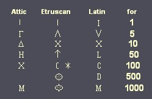
I & V the first in roman (numerals)
labialized or nasalized? m is pronounced over nose.
n is also, even though it's managed not to be labial.
nevertheless, m & n are cognates, and n is probably new.
as abc it was imk I MK it is crazy.
where's l? I is l. K ~ N? ᚴ ~ ᚿ (because o is ᚮ in unicode and upwards in Bornholm)
are k & n come out of ᛜ?
𐰖𐰗 are both [j]
𐰗 is in Yenisei
𐰖 is in Orkhon
𐰶𐰷 are their q
𐰷 is in Yenisei
𐰶 is in Orkhon
If 𐰗 relates to ᛜ I dunno, but 𐰶 does both look and sound like ᚲ
(if it's truly etymology or merely mnemonics I dunno as well)
> As if palatalization is from vowel i, and labialization is from consonant v
nasalization (the same as labialization) turns into йотирование in russian: я & ю are believed to be юсы (according to Даль, носы)
So these deviations are in a sense both i's: palatalization is i after the letter, labialization is paradoxically also i but before the letter. as if и[i] is u (look the same in cursive)
i jklmnopq r
у фхц ч
u vwx y.. ?
nah..
у ф х цч шщ
u vw x y z
шщ s z
z is zed zd st (t short s aor s long t? ת is reported to sound as θ which make it reflect θ)
ε ζ η θ
and that demands θ to take the place of ζ so ζ can be final as z is as З is in ёжз η is ᚼ is Жж
As I said before, fuck academia.
Museion forever!
The british museum responded to my message with an offer to use their collection to further my research: https://www.britishmuseum.org/
And dice, die, palamedes, these search didn't show me anything I didn't know before,
Abecedaria also, but abecedarium returned this image:
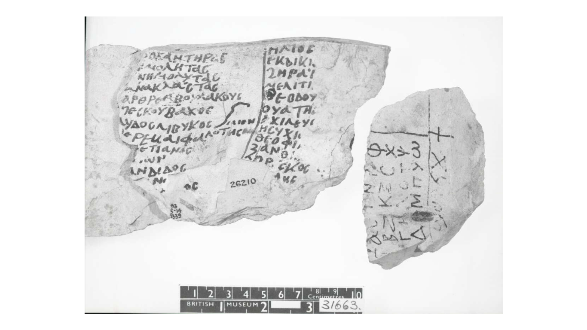
it went structurally for the first half:
Α Β Γ Δ
Ε Ζ Η Θ
Ι Κ Λ Μ...
and then, where M was out of place it's as if it's broken by the additional Ν Ξ which could be nix.
Ο Π Ρ Σ Τ
Υ Φ Χ Ψ Ω
are five letters per a line, not four, and these added complexities make this structure not exactly evident.
Was looking for "abecedary ostracon" and the first good find is this:
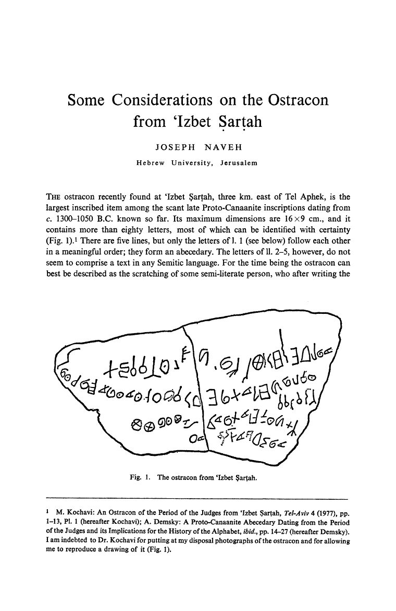
I hope sometimes people are not so poor that they place their pdfs behind the paywall or at least I am reich and subscribe to all the journals just for the hell of it. but fuck it, I don't do it by ideological reasons.
That ostracon uses a good method to conserving the information: they start with the abecedary so those who use some other font will be also able to read.
It's even good that I don't see the rest of it, so I can make my own transliteration just to practice
(or you may)
and another one:
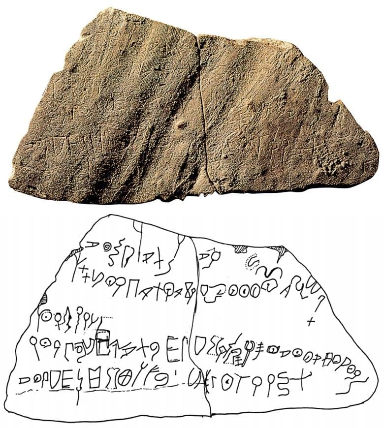:
Inscription on the 'Izbet Sartah ostracon represents the earliest known non-cuneiform abecedary. The ostracon is discovered in 1976 in 'Izbet Sartah in Israel, and it is dated to the 12th or the early 11th century BC.
The inscription is written by an unskilled scribe, probably a student, and it consists of four lines of writing exercises, followed by the 22 letters of the Ancient Hebrew alphabet in the fifth line.
The following table is stumbled upon during that ostracon abecedaria quest, but it's something different, it compares phoenician to hieratic which is awesome if true
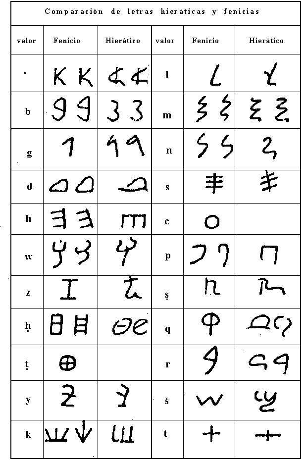
another piece of that Budge-Brugsch-Rouge egyptology abecedaries was shown to me by some Maxim Makarov: it's from a book by Budge:
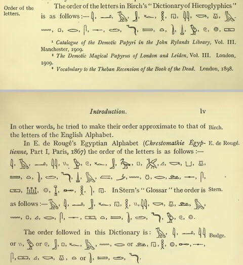
I just noticed that since I learned that wehn frsit and lsat ltteers are the smae, you can raed txets dritotsed lkie tihs, I bgaen mkiang mtasieks lkie tihs, so beware of them and this way of writing, this bug didn't happen to me until I dared to write like this somewhere before in this draftflow.
I also noticed that these three are different: it's Birch instead of Brugsch this time. I wonder if Birch is just another way to transliterate the same name, and either way why are their names so much alike!
In my notebooks I discover how lines of the alphabet could be aranged into syllabary sets of
voiced-plosive
voiced-glides
sonors (whatever they are)
voiceless-plosive
voiceless-glides
and then I go further to the 4*4 table with no sonors, but some of them appear other spots or are they?
Check the first knitten (нить [nitt] is thread in russian) notebook when it's scanned (see further for it or the manuscript folder past #50 (it may be closer to #100 because tens of unscanned notebooks predate it)
Why do they keep on pushing "fewer" instead of less?
a drop into that bucket with swasticas and triple yin-yangs:
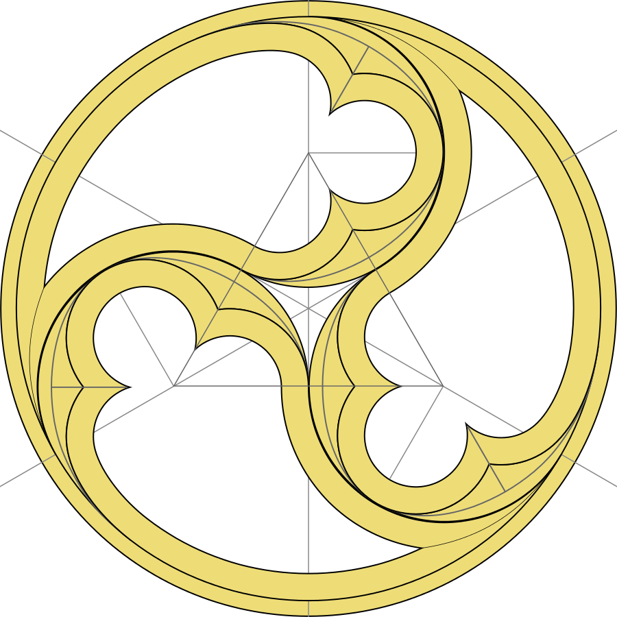
notice that it's both directions at the same time depending ot nhe way wou see it.
sincerely, sensibly, in these two words first parts could be cognates to sign, but to tell it for sure we need some ai to feed all these pairs and other things. What is your aspirations in life? You can achieve anything in just 10 years, so a person (and perdaughter) can achieve several incredible goals during their lifetime. Are you into ai or biology or programming or music or where would you be?
caught got, this kind of cognates, vocal cognates, I wonder if all vowel-cognates synonymous, because vowels are vocales in spanish. пора давай пока were the first ones, and they can be cognates, пока is bye, and пора is "it's time" and давай say for bye. So this mental experiment could set the borders of the vocalization liberties, and if fills like weak-strong stressed-unstressed beats, like in heart. a steady bye-bye with the second bye stressed. I heard of a guy who claims that intonations are the key to understand any language, I didn't take him seriously, but maybe he discovered some animal level of understanding the language. I will check him.
the power of ultimate honesty yet, try it accurately, recognize its limits: to tell truth to enemies can be dangerous, first you have to realize what is the truth in the world where those people can be your friends, but this is so raw for me too, I'm a theorist, I can only guess where the implementations of these ideas can lead.
It's hard for me to look into my own drafts because they are full of obsolete ideas which were rejected or forgotten, but those drafts still contain their gems demanding some further.. cognitions?
(I don't even know what exactly they're demanding. Being archived and never touched maybe?)
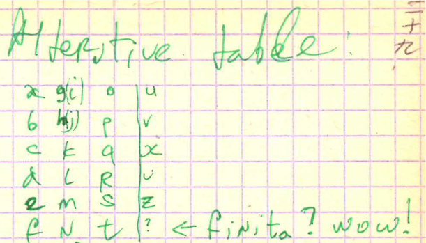
It is just wrong. It's good I explored the possible arrangements, but why is it even here?
Was I surprised by three-mother-ness of ems or dollarness of dlr and chequeness of ckq?
Now this is how apophenias work. It could be anything, and thus it's nothing.
Those three columns from a to t are three by six, and I probably didn't think about it then,
and h among vowels also makes sense which I wouldn't probably see back then,
even though I studied japanese already.
d reflects r as in the k-symmetry, which I already knew then,
f reflects t which is all very interesting, but I don't think this representaion goes far,
but it does reflect the idea of g being a form of c and h coming the latest.
Was g the original as in original g? Because runic alphabet doesn't distinguish ᚦ into c and d.
and j & h meet in ᚼ which just as j can sound as h in one context and as short i in the other,
so h can sound as h and yet in greek it's i the way it was transmitted into russian,
unless they took it directly from ugaritic 𐎊 or egyptian 𓇌(𓏭)
I don't like how m stands out of labials, but it's nothing new.
I especially don't like how f stands out of that column, but that could be the reason behind greek θ.
Either way what's about E? Is it why it's consonantalized in arabic?
In greek z is the final of the first column, which demands me to ponder on it in greek:
Α Β Γ Δ Ε Ζ
Η Θ Ι Κ Λ Μ Ν Ξ
Ο Π Ρ Σ Τ Υ Φ Χ Ψ Ω
Α Β Γ Δ Ε Ζ
Η Θ Ι Κ
Λ Μ Ν Ξ
Ο Π Ρ Σ Τ
Υ Φ Χ Ψ Ω
Α Β Γ Δ
Ε Ζ
Η Θ Ι Κ
Λ Μ Ν Ξ
Ο Π Ρ Σ Τ
Υ Φ Χ Ψ
Ω
I dunno, it doesn't seem to lead anywhere, the first case of 6 8 10 was the most interesting, even though it also didn't have much of symmetry between it's neighbours. and even those other three wouldn't help.
See, returning to the old notebooks is a waste of time. I was so worried about my drafts (and I probably should, but let some other people or machines look into that whatever.
About those intonations, melodic patterns as information:
покА, давАй, пиздУй, летИ, bye-bYe, /
but
остАнься, stay hEar, ^
as if / is waving goodbye, and ^ is waving welcome.
отстАнь, but остАнься
as if the final syllable is not sya, but not.
Pronouns are often antonimous towards itself (in different languages)
Can yes/no go like that? can sya be no event though si is yeah?
like what's the difference between hai & nai in japanese?
is it the same letter but h is upwards, and μ is down?
but "how do you do" has the same melody as "нахуй иди" or do those i & u make all the difference?
I think that work is done, so why should I wånder? To make an independent research to compare afterwards? I doubt this flow delivers me to the my goal in in all: to recognize all the morphemes.
Let's begin with building a map of only pronouns, it's a simpler task and those alone could connect to tribes names and the gods they worshiped. Read the first knitten notebook for more detail. or that's it.
how do you do is more like хавай еду
This world is enough
(that was an automatic writing, the one french modernists promoted over a century ago)
((hopefully thinking about how it's all going to be just alright (with the capsule and such)))
Some more of ogham:
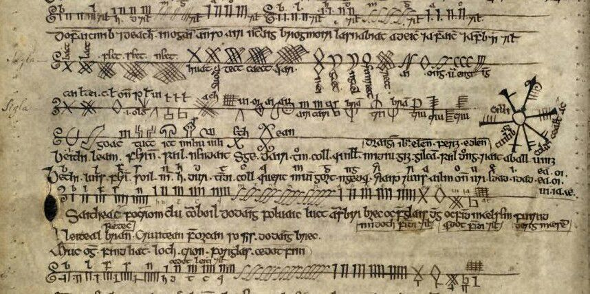
not the best example to learn ogham by, but it definitely contains some info, here's the clearer one:

I only wanted to try to read the ligatures of the following image, but what use, I don't speak Gaelic.
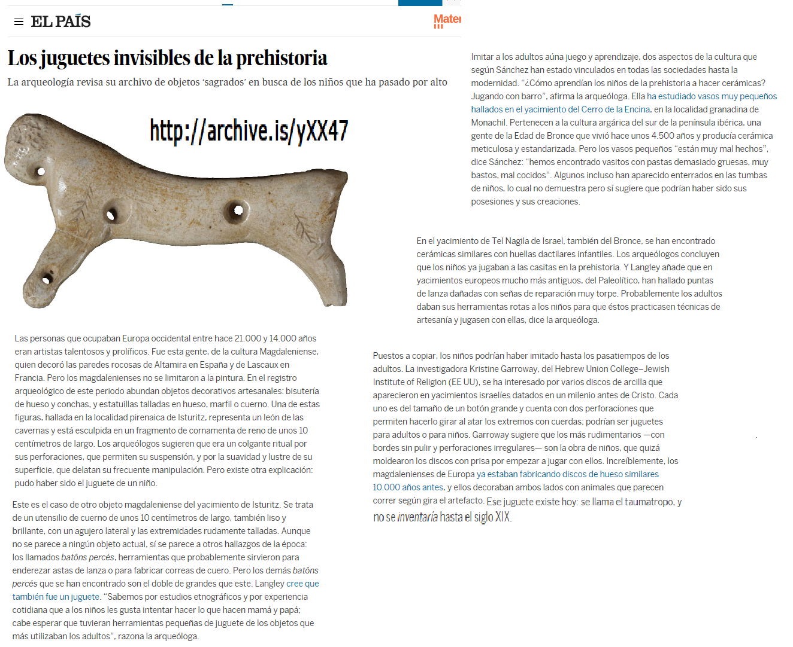
I don't even know if that's the same writing system. If it's a writing system.
An update on Great Parma:
(archived)
I fancy thinking that what I write in vol.1 influenced that guy, because I spoke about it elsewhere anonymously. Either way he did some great work, showing historic pages I never had an idea about. Bravo. but nevertheless freaky, so be aware and trust nothing, we all make mistakes. I go freakier..

(clickable)

Though I think this very script has nothing to do with the permian, that video mentions some other accounts of non-kirillic writing systems used in moscovy. нас заковали москали. кали цари k-ings z-s.
z-r zar kniazer khazar? knyaZ Znatt (weed suddenly hit me high, I guess, reading it later)
г-дь г-дин господин господень божий человек божий народ боярин богач богатырь богатырень
боится трясётся бьёт тряплет трясёт просит prays бьётся// цwhat do
That piece of the bell is from the russian public opposition to official academia, it's here not because I immediately see something in it, but because it was in a film about anbur my friend and colleague who helped me with .odo have shown me, and I also want to collect all the writing systems, even invented writing systems deserve being preserved for history as clouds around tree of writing systems, simultaneous with the language tree. now back to the black text: only why didn't they teach us that? why would they drive us crazy? also nationalism and separatism are felonies in putin's russia, pr, P as rusia's torch at olimpics:
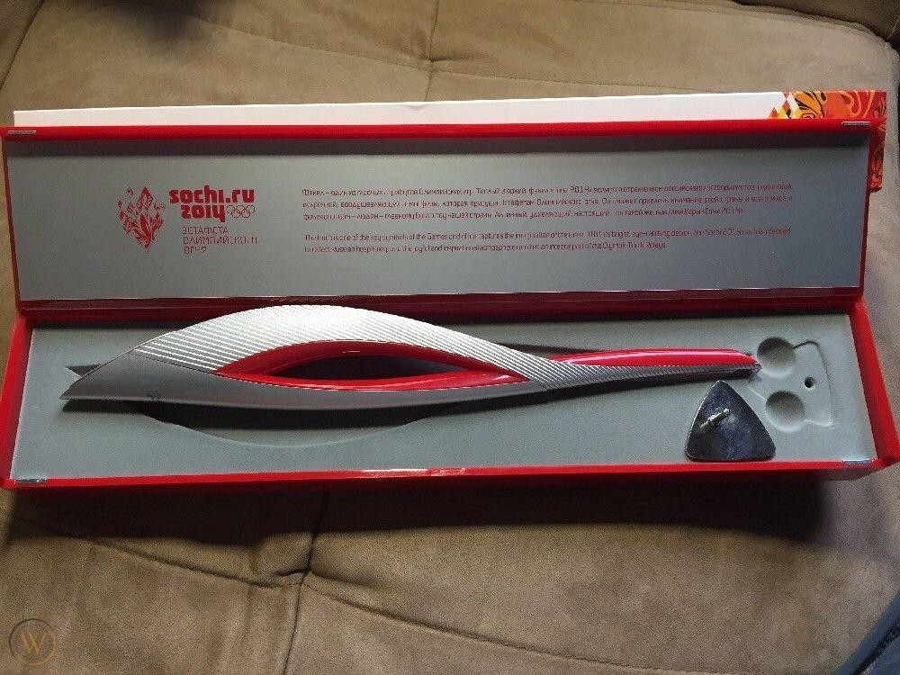
For russians it's Р in Россия, for foreigners it's P in Putin, so I may only hope that next will be navalny because n is п in путин (doubtful foreigner, see the cursive forms) that sosni zainцу's another story.
Even though I recognize another jew in navalny, they play us like children, but their games brought me the understanding of some bond between several letters:
n-п-p-р-r-г-g-д-d-D-and back to ᚦ and р and p
g-д - see russian cursive to understand (same as with m-т further on)
let's find the other raws like that to see if this game even plays:
b-B-В-v-u-и-И-Н-h-n-ν
b&d are supposed to be the opposites, but they meet at n, but they also meet in roman cursive, where they both look in he d-side, only Б (there flipped to the left) has a longis-kind just as ᛒ is double ᚦ.
M-m-т-T the weirdest yet thoroughly separated from BD, so that is how it is? Bd and mT
That is ultra funny, because they look like Majuscule and minuscule forms of Bb and Tт
Oh wow, no need to see cursive tables, т is officially the italic form of т.
little form of B could be farting sound or was В [v] as that russian letter is, and B [b] is its english form.
but then it doesn't explain how d is a small B other than ᚦ is a half of ᛒ
Was it semantic notation instead of phonetic one? Two lips, but only one tongue.
Tт contradicts Пп a little bit, because in cursive standart (устоявшееся искусство? fole etymology)
see again:
 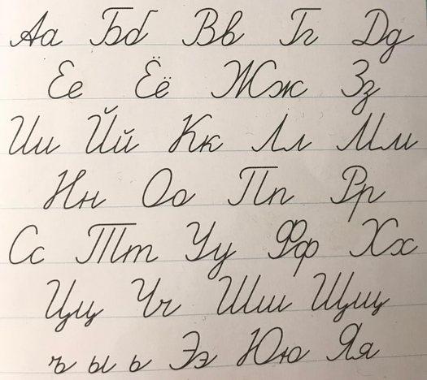
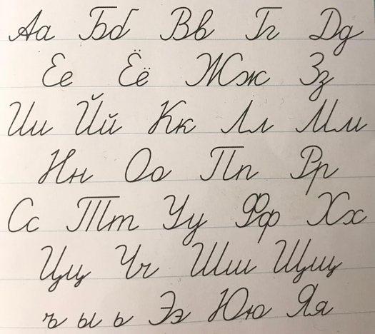it's as if ПТ challenge the order of MN, as if П is M and thus n is m and N... error, error, building of a sand, guessing too far, bridge doesn't want to appear, or I simply panicked, but it's something to ponder on that's for sure, only if this cursive isn't cursed, because it delivers some mindfucks, like why д looks like g? and why п lookls like english n, and especially why т looks like english m now?
I'm not sure I placed these two sides by side, I must be sure I do when I combine it in different books.
According to that right image, ч/ц is like ш/щ, even though the order doesn't support it, compare the majuscule forms, ⰀⰁⰂⰃⰄ of абвгд shows how free russians are about hight of such elements: в & д oppose eachother completely in the other font of theirs, where bubbles on them are all like the last one.
How reliable a source the russian alphabet? al russian regimes were rather ominous, so ominous that the current cleptocracy seems as one of the best ones, so shitty they govern us here. So wasn't russian writing mutilated to fuck us up especially: like russian cursive fucks us up, why would Д & д look differently in cursive, and they both look differently, but especially д (that's italic д, but it goes g way too, which is especially f-ed-up, but probably refers to ᚦ)
Back to that bell. Not that it has anything to do to my research, but it's a language thing, and as in the television manner when they feed the viewers some based stuff and then add some atrocious bs, I feel it to be my duty to take a good care of that piece I never even knew about. As I said, that misterious script isn't permian, but what is it, Here let me link a good article about it: https://dic.academic.ru/dic.nsf/ruwiki/505332 (mirror)
and a simple bilingua
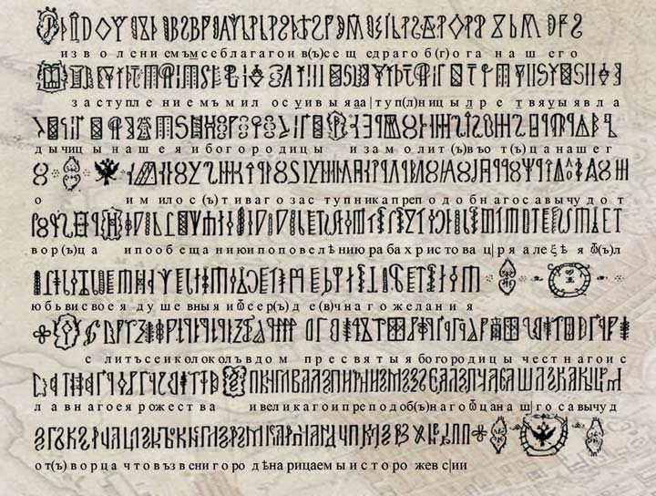
(it's like six different cyphres one after another, check the link above to see if it's okay. there they admit, that some mistakes are made, and that mistakes are considred by that freaky opposition to be evidence of the translation being false, but they could be explained by the artists not knowing that script (as it used to happen with chinese manuals in russian before the internet got better) and the tzar himself, who probably inspected the forms before the cast could be unable to read them without the tables of his)
I took that episode close to heart, because I saw one of my discoveries used by somebody else (and I cannot patent history or to let other people use it, but I told myself that they will attach to it shitload of their own shit, and those this bell thing is an interesting curiousity, it is probably work of art of the tzar of the occupiers, it has probably has nothing to do to writings of the conquered nations, it's just some high-ranking retard having fun. I refuse to keep on digging into that episode for now, I only keep it here because of that n-п-p-why doesn't that p go more г-like or rather г-like (that first one is just in italic)
but to my surprise that г would look like what I was looking for if you placed it instead of ɔ in p.
yeah, because of that being stuck in this part, and it's also freaky in its way, maybe even freakier
Бd and ПMт is a great breakthrough, so why worry if some people spread my thought the way they can, it still get out there, I can catch it later, I also can prove that I was first (if Fomenko didn't say it first. I contacted both him and Nosovsky, because I referred to them and not only in the freaks.html, so they could take it from that first volume (but I backed it up just in such a case, or if they spoke about it before me, then I should stick my чсв into my own. I don't really care, but I do. not really. yes. but not too much.
ᛆᛒᚦ would make more sense if d was a consonant form of a (as if they both were da, the one syllable of some prehistoric syllabary) then it would go 1212121212.. and just as ᛒ is double ᚦ, so ᚾ is double ᛆ and thus again e ~ o (because aa is o, but it makes more sense if aa= o, oo=u, but then again ee=i, so does it say that u = i? which is strange, because и [i] in russia.
but why ᚠᚵ follows ᚾ if ᚾ is already doubel? 12122120 it all doesn't look right, and thus my guess is wrong. or was there a letter between ᚾ and ᚠ or I'm making it up? I most probably do. It's time to go work on my capsule, but I'm a commonner and don't just dare or what, please god reprogram me, I must build that immortality capsule, it's not enough to just know the way, one must also walk the walk. Please! Gods! Muses! Superstars! All make me mighty and powerful so I use this might for good.
So, in conclusion of this freaky day, I must say that language enthusiasts who are looking for russian scripts are desperate, because they grasp every straw, but ignore the based glagolythic script, for whether ertza (zyryan, komi, parmic) script is ancient or not, it isn't russian (even though it could be a criminal thing to say, as a free scientist I must.) There were writing systems on the territory of Russia before christians, because it's impossible that they wasn't, because the fashion for national writing systems was universal. Whatever, the possibility maps will be built with some advanced computing powers, I only set the vectors, the fractals will be drawn by the other beings.
Why didn't I dig in into that knitting stuff, I found it and as if left interest to it immediately, and that is how I usually work: I discover something, I let it lay, if it matters I return to it. or am supposed to.
but one final chord:
The city where that bell used to be is called zvenigorod (toll-city) and for whatever reason their emblem is like that, with 88 in the centre of some seamingly meaningless text:


is it also why they call us racia? are they preparing us to be cannon fodder for another rahowa?!!
fodder feeds, huh
So I guess the first incident of somebody using my research (if we call my thoughts on anbur research) was good enough: somebody translated my separatistic tendencies further the knoosphere with a sticker on it: I had some pdf-library mirroring my pdfs and now somebody transmits it further as their own. ir could be some plural suffix like aettir. their = те их? иf ich, whiy the?
eir ear ух
i ~ и
a ~ у(u)
are all these one letter and only o is double a? a is oi? or si as duh? as is is? a is i? a as ا?
ו doesn't wan't to stand peacefully with that ا on the same line (try to put a spacebar and ו after that ?)
ו is o and u, thus any vowl could be |
разделитель? не бру, а беру, типа тпру, стой, сними той, buy бери, буй (стопори?) бери? обуй вокруг возьми (кожу вокруг ноги продают?) обувь о- boot, boot is boat? 𓃀-ed or 𓃀-еть. 𓃀-ell? 𓃀-owl? 𓃀-rake? 𓃀-ellow? 𓃀-ong? 𓃀log! 𓃀ox 𓃀ottle 𓃀 значии стоячая, ? ШэI'm so high? , why dare I say? don't get hight until you're adult, I took tit since 16 or 18, and I don't recommend it to anyone who doesn't made his or her serious opinion of what cannabis smokers are in the society and if you want to be like one of them, and depending on your personality you will whether see musicians like me and others or you see them as slobos. maybe my trippies are you most or least favourite parts.
𓃀 shows flat bottom in some eau-ed-el
𓃀 keeps the ox still (standing, st-el)
𓃀 makes your log not laying in your table, but up as on site (not down)
𓃀 is standing (as in thang instead of thing)
𓃀 is standing yellow, as if he pissed himself, that's why yellow is associted with cowards in english
a𓃀ove is showing ab as up?
abnormality is abov normal level anomality, so it's not ab, it's a.
a above
b belov
a obey (не дерись)
b бей
a ata
b baba mama
a ash пламя flame fire F? father?
b meim вода woта WM woman mother?
a d t
bmb
кирилица подделка под глаголицу как иврит поддерлка под санскрит
глаго лица - говорящие образы (конечно же это поэтическое осмысление, не вычитанное)
также и анбур наверняка имеет своё значение, а за ним и целая культура
(но это философское осмысление, тоже не вычитанное)
google translates глаголица like verb (глагол, cлово слогово) word = verb, d = b, do is be and be is do? verb v or b
d was b and b was v? В is V in russia. as if В is also Ⰲ turned 90° just as Б came out of b or Д came out of d - as if russian forms are latin forms tuned 90° clockwise. And thus somehow Ⰲ is an ancient form of V which also looks like Ф and M and UWand so on and מם𐡌 and 𓅓
and that owl makes Ⰲ more ancient form than B
did B form appeared when we began drawing bodies instead of faces.
so glagolitsa are calling faces (see litso in clockwork orange)
and Ⰲ is exactly gragolythic (lythic is stone, and it's as if litso is foundry, founding, and those who called lythic stone were speaking in stone age, and we acquired these types of words like face only when we knew forgery so good we had foundry? But then our language should be developing among vulcanos? or forest is better to experiment with fire? or is ll these etymologies absurd? I do the best I can, I wll sort out them later.
will = in all? вообще?* когда-нибудь, ? сделаЮ futURum but I'm lost again and don't know latin
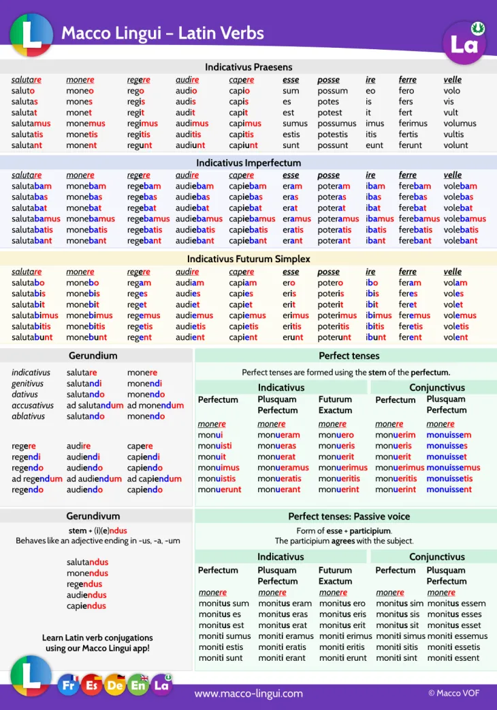
I tried to find it in a better quality, but only found this:
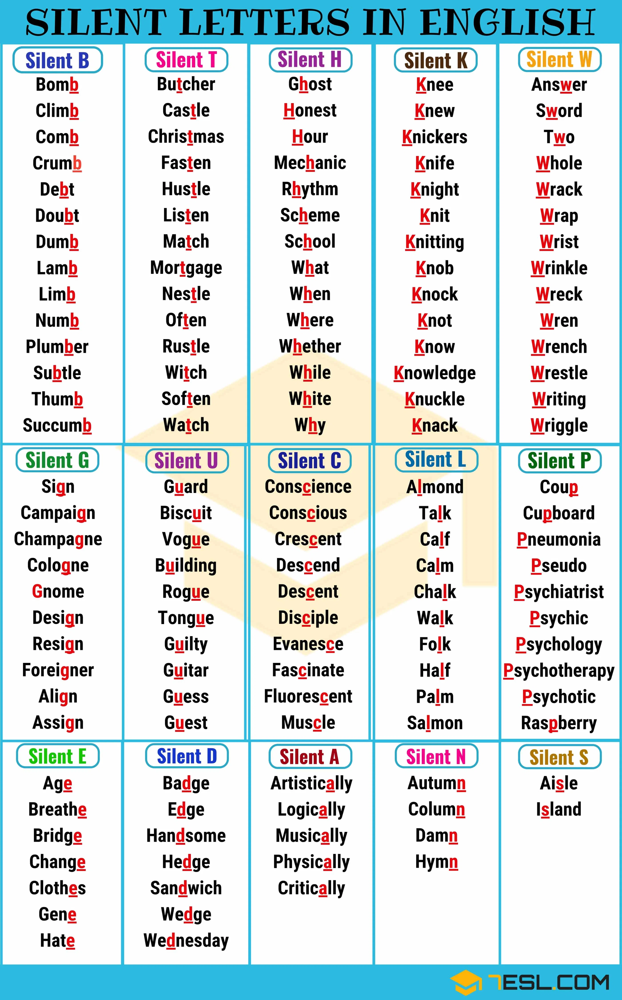
And I asked myself? Could these secret 15 be those legendary 15, the original canon of the alphabet?
ABCD
EGH
KLN
PST
UW? nah
So that trip was high and low until I went of f the track.
let's conspect the tasty pieces of the trip:
Ⰲ was before B
глаго лица is probably главо лица or гласо лица глотка т, с, в, г
вгст I wonder what it means. гла mattered the same thing and вгст changing changed the meaning.
глава вааббще,
глосо голос с эс ин сэй скажи ска~жи ска-зывай жи ори жжи ори жги оги I dunno, could be.
глото if all гло is head, глв, глава главна в энд н сффиксыс
𓃀 lives in b
a above
b below
if b matters in below, it's 𓃀
a thus is 𓂝
and if it's in above then that ab is up, and shown by the hand up 𓂧aar
𓂝rm
han𓂧
𓃀oot but 𓆑oot
улиточка считалась подошвой? если всё живое на разных уровнях развития (что видно при сравнении человека с обезьяной, то улиточка лишь подошву и ноготок или клювик или череп или панцырь черепахи
Let's use egyptian symbols more and more.
I will when I install some patch or attach or addone or additive to my station so I can type with egyptian b d f g i k m r s t to see where they lead me, eventually writing it all in egyptian letters and watching how the meanings floeat.
leg is 𓃀een [bejn] in dutch (bone is also been, so they saw bones as legs?, plural form is benen)
foot is voet [fut] and poot [pəʊt] which pretty much unifies all the labial (except m)
been en steen is bone and stone, начало и конец, bot is also bone.
Yet in deaf alphabet a is a fist and palm is b (d is also palm, but in the form of closed c (c is a palm showing c with thumb for the bottom end and finures for the top. why finures? gingers, fingers....
d as closed c
b as closed ɔ
and thus c is a for some hebrew alephs remind k?
male and female, yang and yin
But back to the deaf stuff:
I was speaking looking at the end of /deaf.html (which was end then, my now, here it is again)
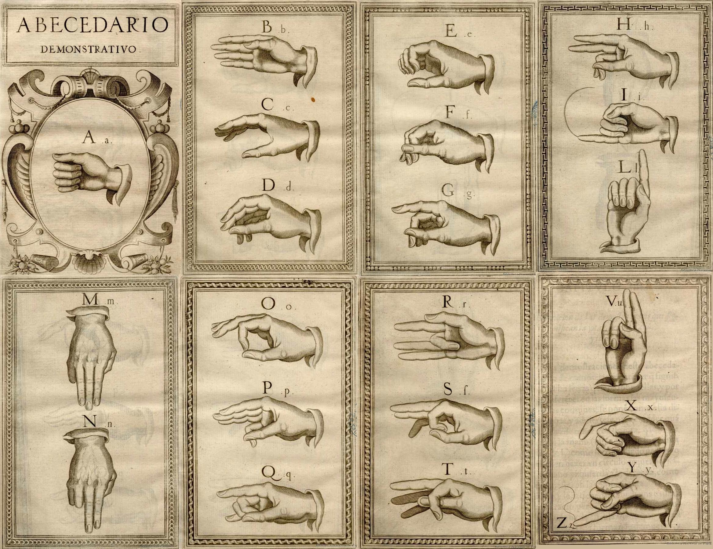
but there are other sign alphabets:

being completely different system, surprisingly L O and T are the same, and some other letters demonstrate similar meaning (if the mining is in the fingers themselves, compare E, F, M, N, P, S, Z, especially look at how there are two R's in the second one, so these three variants are as if R occupies two fingers, and you can press any of them or both. Why is it here? To make it clear. It makes it more complicated, but it's here to clarify the first of these two: It's as if it counts fingers FGHI from index to pinky, L is similar to G which reminds me a lot, MNO simply draw the letters in air, on both tables so, PQRST counts fingers back from pinty to thumb or rather it's as if it's FGHPQRST, notice how o reminds s as if it's σ (Q could be the nameless finger, but then not to confuse it to R, R doesn't need thumb and Q is modified too to make it clear. Hh & Ы are the other uses of this simbol, as if for Horns and for drawing the letter in the air, like those MNO are. Now I wonder if those 15 letters are 14 falangs and the whole fist for later-induced A?
Look what I found: Ivan or Juan or Sven:
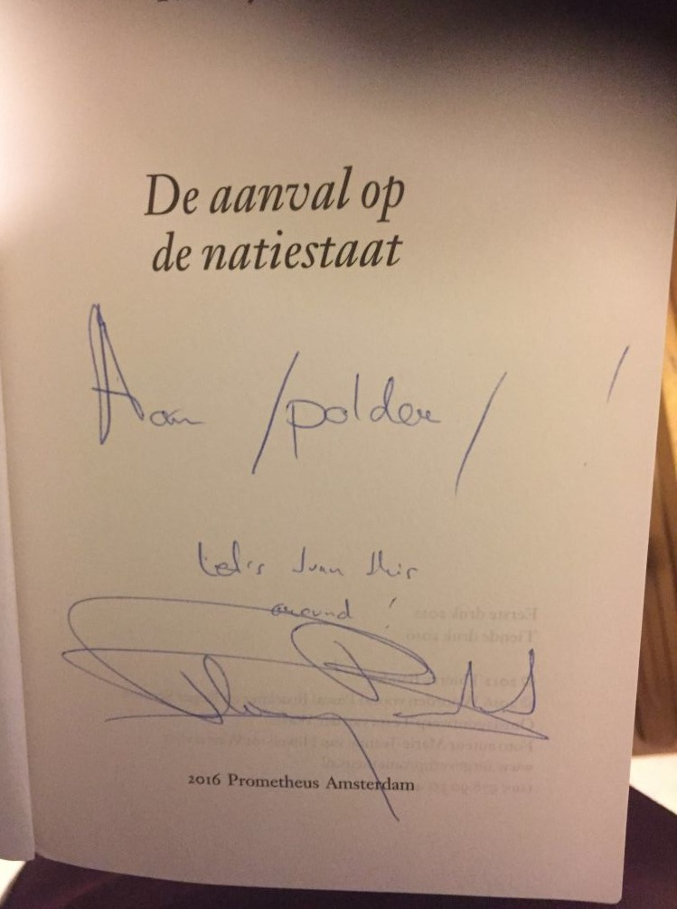
probably I can see now why cursive is called that.
I even read around as world, which maybe stopped me from readin that ivan word, still can't read it.
but if' it's let's s... this around, his s and t look very much alike, huh, drawn differently: s in one line, t is in two.
Here's an ironic truth: I learnt scientific method from a protestant pastor: 1 2
observation, hypothesis, experimentation, theory, communication, replication
and now I apply it to my work and I see some irregularities:
I experimented with hypotheses I got during my observations of the language: armenian regained the link to the structure I've onserved when I digged depper in the past (in Mashtots's students memoirs)
So now I must build my theory, but theory began growing further. I had hypothesis that the structure is universal, so I observed (during the "experiments") the other languages and explained all the irregularities (greek myth writes of 2 vowels added to the 5) only M is not explained properly, but what is Ζ and Θ then? ΕΖ/ΗΘ are invariant pair as in OP/QR and in russian after З(Z) goes И(I) as if Z is the final, and I is digits, 1I 2J 3K 4L 5M 6N they're tens, 7O but 8 fits O much more, but in hebrew 1i 2k 3l 4m 5n 6o 7f 8q 9Я
s is sto (hundrend)
я загнался, в иврите 1i 2k 3l 4m 5n 6s 7ayn 8p 9ts (as if tsadi is z)
100 is q 200r 300s 400t + 5soFits (co Fin's)
q and a are similar in latin, in cursive hebrew it's as if stick around a curve siply stands at the other side, and then yod is that curve? It's observation, but what it's hyposesis is? Hebrew ones tens hundreds somehow reflect each other? Let's see it in others bet, kaf, rush, all are very similar graphicaly, but almost three mothers in phonetic structure, it could be another guess, but a i q don't play this way, unless I recognize some form of p or ф - let's go on with the previous hypothesis
gimel, lamed, shin - gimel and lamed are very close in this work, I observed their similarities many times (mostly graphical, but 2's are also only graphically alike, but what is shin! completely different, but if it was S, lamed is very similar, and s is related to c.
dalet reflects tav I see it clear, the 2nd is M do die tav morte? I didn't expect this company, even though т is russian italic т(t) but now dalet is out of suit, colour, масти.
Did D gave birth to T and Т gave birth to т? В смысле не просто та, но моя, Not only that, but mine.
I-row is full of questioning postfix: did humans learn property when they began to ask questions? Просите и дано будет вам. а не каббалу ли я открываю: каббала как вера что понимая язык можно творить магию (то, что другие считают невозможным)
So let's start that good topic again:
observation, hypothesis, experimentation, theory, communication, replication
Justus didn't explain it, but I can say it myself, that theory is a complex of hypotheses, confirmed by the experiments (by the further observations, observation is always present, or at least in every second step? because hypothesis is made with the observations we already acquired, without looking at the randomness of the rest of the world, or is it just that additional observation, that allows a break-through of a good hypothesis? So observation is surely exist in experimentation, but building of a theory is again the thought process, only it works not with observations, but with hypotheses, observing the hypotheses about the subject of the theory. Communication is observation of that theory by the other people, replication is experiments they make (they observe the language with my theory in mind to see if they can find the contradictions to it)
I knew why I communicated it too early, at the stage of acquiring the hypotheses, before the theory was built. But that mistake lead to something good: now I can show my site to my investors so they see I'm not just some crazy pothead, but that I actually work on a problem or two.
So now I made it a race, I'm a racian, racist, racer, chaser, rats chat rock choke jewels rules)
parallelly to this text go notebooks (second (third of two) knitten notebook tells of !? being ab, yes no, and so on
Those notebooks mostly have observations, but also hypothesis, so I have to feed them all to an ai which would build to me the links between the observations and hypotheses to make me see if it leads to a theory. The larger hypothesis, that all morphemes are universal, will be guaranteed a theory while I have a head large enough to build it, to collect all the possible morphemes in a moment. Most of my observations are comparing different morphemes if they click or not. a net of false (failed by experiment hypotheses should be also built, separately from the main, confirmed ned of observations (see if it connects into a net at all)
A lot of work is to be done. I make it online, which is awesome, I died to see drafts of the guys I read as a teenager, I guess some young blood is lurking around gulping this honey or smoke.
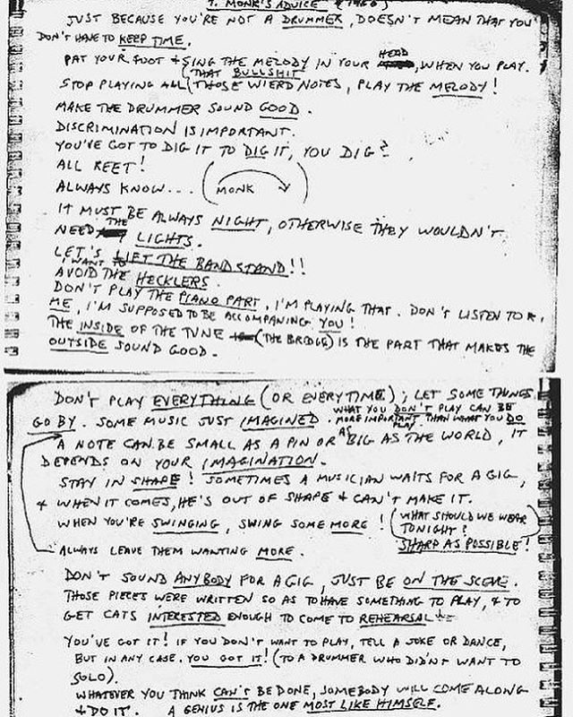
Monk knoW
's (in english, latin, greek) is it the same э'с sit, зад, to shy (shaddow) the euphemisexed ass.
x could be (but that was typo) an unknown letter, как звонкий вдох, если как тот же самый, то это многое объяснит про русов. приты as's но русы как's - and both are probably c, and could be a luckier, purer form, k could be tabooed for this reason. (I just erased "was" in stead of "could be" because I knew it was not some holy typo, but an error, errors erase. oh! red light! why not arise? errors later arise in the form of a problem. and error A problem B crashing C?
monk know made me read upside down, erase turned in a saje 一 я сначала подумал в саже, а теперь вижу что может и sage 一 I first sought of шалфей, and now I can see there a sage, мудреца. same se as in science and conscience. I scio I know. sc as kn? c as n? g? ᛜ? Ŋŋ is literally eng, as in english, as if those were two brittish suffeces: ing and ish who could be two mothers? B & T? and vowels are still don't always considered to be letters, but positionally vowels and labials can be together both by their positions in alphabets, and because linguals (the C's) are twice as much or even bigger if tey unite. I hope there are 13 vowels+labials in english, because it's a 26(-letter) alphsbet (s for a, why? next button) a b e f (h) i (j) (l) m (n) o p u v w y — withouth grey brackets only 12, n~m? or h~n?
but b is closer to d — it's hard to believe b was considered among vowels than among d, they look so alive, but are as different as
as as так как (as is literally kak, both are c, both are que. c срань и caca & ссу waste, shite, w & ш мит эгэйн, э is энглийскиое а.
n is both m and п(p) ᚱ and ᚢ could meet here somewhowre
h is a form of n, some n with a stick, high nog i don't know. (nog is a typo instead of nig, wheteher gnigeh or nign or nig indeed I thought about it)
h is probably double i, see how H turned into И in russian as if it doesn't matter, and N is Н in russian.
N stands for &, just as И
и also is a pustfix of plural noun, just as n in german, ИNSZ are four mothers? four phases moon has. four week, four wigs? four wicks? four знаков, wick and witch are close to wit and wisdom and weet, and ведь? ведать see = видь=ведь? но это натягивание stretch. пространно. speculation? something like that.
ИМСЗ
IMSZ
I(wait) Z (wax) M (foolMoon) S=С (С is russian S)
and disagreement about C (B & D are much more certain across the alphabet) tells that ᛆᛒᚦ is ABD, and modern meme ABC just tells that... what... whether that it's of the modern period where C in some form is present in all the alphabet, except that norsk one from bornholm, or is it even russian, because only russians have Ж (also berbers do, and they worship it, and binderunen are often drawn around it:
Three goddesses are known - brits have more of ass than rus have cacs - also in non-jewish middle-east as Allat Manat and al-Uzza, which allowed me to put Uzza first, because al of allat could be also an article, that allowed me to declare them three mothers as Uzza Manat alLat, as if Uzza was winter and autumn in one piece, Lat would be l'ete - french guys have similar article, is it why they merge with arabs, frencha and spanninsh are visuably darker than the north. It is another form of subjugation, slow and lte stealthy
Now I see that Allat and Manat have similar suffices, as if they'r are aL Ma(N)
what is al ma na ch? el em en ts? ts is ты in russian (as if the you ты)
my text is so difficult, no editor will do it. In the past editors didn't show how it was before them, now we'll see who's in the wrong.
And I read about al Uzza:
она вместе с богинями Аллат и Манат входила в триаду богинь-дочерей Аллаха.
На юге центральной Аравии аль-Узза выступает в качестве супруги Аллаха, матери аль-Лат и Манат
Here I can only poetically guess that Uzza was уста and vowels, and Лат was tongue, Манат was lips
If UzzA are vowels, than it's childish cry of inhaling U and exhaling A,
and A gave birth to Λ and U gave birth to ν and μ, hence in and im
им and 'em is close in russian and english, and that 'em form exposes that th is the. in that too? the 't = it = это и то. th's as сие, в противоположность к то, те, та, тот, то-то. кто-то
к in кто is que. а что? dialectnot prochtenie? t is where е in russian lays on the keyboard.
the following piece (until he word tits) was born in socrates line, where it's doubled. Be careful not to double it when you edit it all in a brand new book.
about allat: אלה, אלת-הים is translated as These, the goddess of the sea.
Where אלה is both these and goddess, not god,
both אלה and אלת are goddess
but אלה is also those and these, just as I read about Elohim, where im is the additional plural suffix to a plural word as it seems. only im is supposed to be male suffix, but אלה is not god, but goddess, thus we consider god bigender, as if it's male priests playing roles of females, as theatre we know of declared to be a norm. Read socrates_line.html to know more about this, but be careful, it's a messy rabbithole.
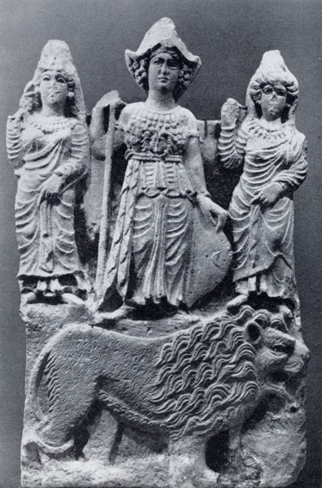
Allat is believed to be in the centre, accompanied by Manat and Al Uzza.
Uzza is the only one having a separated Al as if uzza is mother and suffix is needed to say that it's their mother.
тех shows that те is that very the: because их is the sinonym, just as it to that.
те и си, the & she? h was sh initially, thus her, not sher. t is
that piece after Randomness was supposed to go to 7.html, but by some surprise it is placed in that very socrates_line I just mentioned, thus now it belongs here. I will rehash it when and if I publish.
t is ᛏ the male indicator of ♂
Doesn't that Allat look like a cross-dresser to you? A son dressed as a woman to protect them, and if such a priest plays in the temple, nobody understands how they give births without grooms, was it followed or preceded by the taboo on genitalia demonstrations? Those priests probably discovered shaving first, so they fooled the public. And "her" hat reminds te one of Mitra,
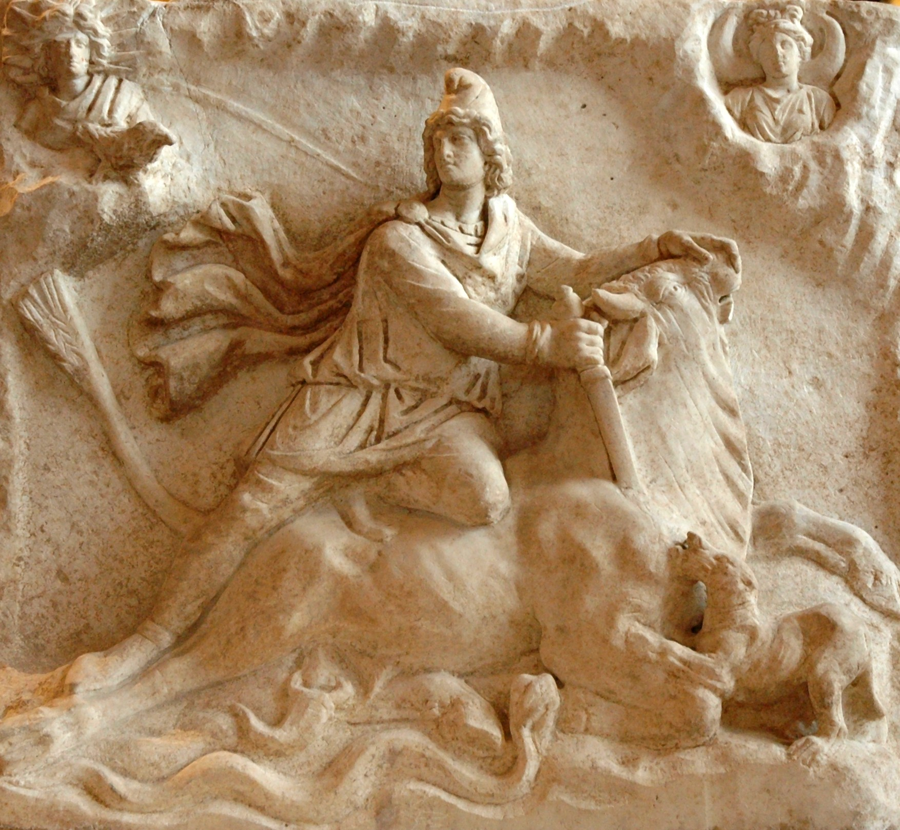
I thought to search for Allat and Mitra in one sentence, and what I found:
The Assyrians call Aphrodite Mylitta, the Arabians Alilat [Greek spelling: Ἀλιλάτ], and the Persians Mithra.
and there are more:
They believe in no other gods except Dionysus and the Heavenly Aphrodite; and they say that they wear their hair as Dionysus does his, cutting it round the head and shaving the temples. They call Dionysus, Orotalt; and Aphrodite, Alilat. (wiki: Herodouts, Histories I:131)
I used to think this to be a young woman whose tits are not shown, but I was gay myself to think it's a woman, the very same accompanying figures could be at the corners of the bas-relief. Snake and scorpio could indicate that this cross-dresser used poison on his knife to easily kill a bull, a female way of doing murder, so it's a prince grown up by the mother and grandmother or a mother and a wife? A family unit, women demand families, guys would rather walk гуляли (к ляле) гулять (to блять) but that's poetry more than science
See how at the previous image, the one before the bull, where the three "divas" are above a lion, there the coentral figure (Allat) is larger than other two, and has no tits.
Not knowing what to write on a next session, I wandered around pictures and found this magic:
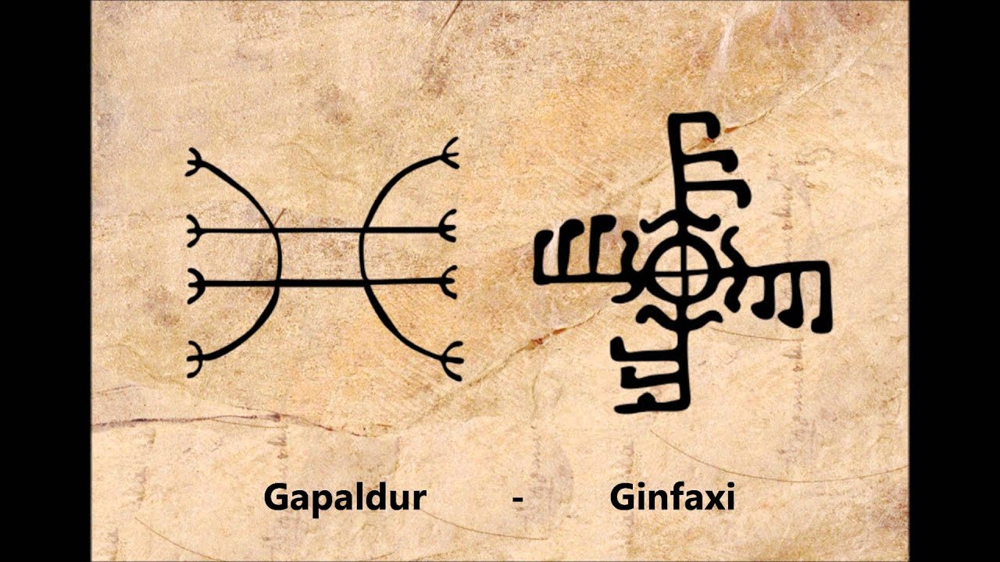
Two staves, kept in the shoes, gapaldur under the heel of the right foot and ginfaxi under the toes of the left foot, to magically ensure victory in bouts of Icelandic wrestling (glíma).[citation needed]
So the left one was under the right foot and the right one under the left, let's remake it.
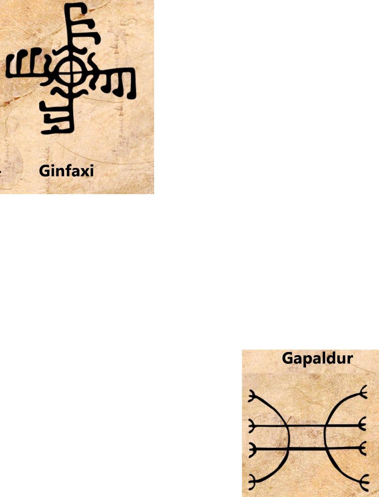
They look as if the heel of the right foot was told to hold, and the 24 ends could be corresponding 24 runes, even though a second ago I counted them falsely as 32 and corresponded them with 32 teeth. I have only 28 teeth (26 already, but if we calculate the hidden wisdom teeth, they will total into more than 28, but less then 32 (I probably have 3 wisdom teeth, maybe one was stolen when I was a kid, or they say teeth can migrate into the skull, so that cancer with a tooth I heard of could be a tooth growing into some anomaly, what are these crazy stories, scary stories, Anyway, the right bottom sign looks as if it's told to hold up. And the left upper one is commanding a rotation. the question which way this swastika rolls is present, because my first guess is that it's "затушить окурок"-movement, and when I think of that wrestling part of the story, it could be a command to kick, as if those are 16 to 24 legs kicking by feet and by knee, or there are only 12 feet and other waves are something else.
I confess that I have no idea which artefact contains a futhark of 24 runes, I just took this number on faith.
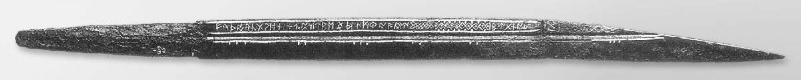
From a far I counted 27
could be 28, but I still think that rune is Ы
I'm probably wrong and there are 29, I need to see the artefact in other pictures and the canon in other examples.
That Ginfaxi - could it be a quadripled binderunen of EWO or ΕΣΟ or ΟΣΕ or.. EWOME.. But I see that E dictates the only reading EWO. What it means I can only guess. In wrestling it could be ЕГО [evo] even though г[g] if you didn't get it yet. Even though russians don't have W, but Г following В[v]
Look at this wonderful gothic futhark, which is a transitional link between runes and letters.
Look how ᚦ looks like Ф, just as ѲѳΘθ could.
 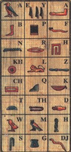
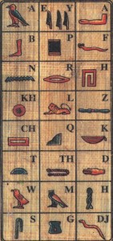Then ᚦ is closer to P and thus first line of bornholm alphabetic runestone is all labials. Which reminds the egyptologic abecedaries, and demands me to go on, .BP.F.H so that only M&W are outside of the labial claster, just as in the alphabet I use now and in some egyptian tradition.
In the folder where I took, they are both named goty, thus they are different periods of Gothic.
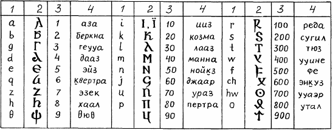
The 900 reminds the final letter on that sword above.
Something I probably posted before, but nevertheless, the vowels in hebrew, A E I O U:
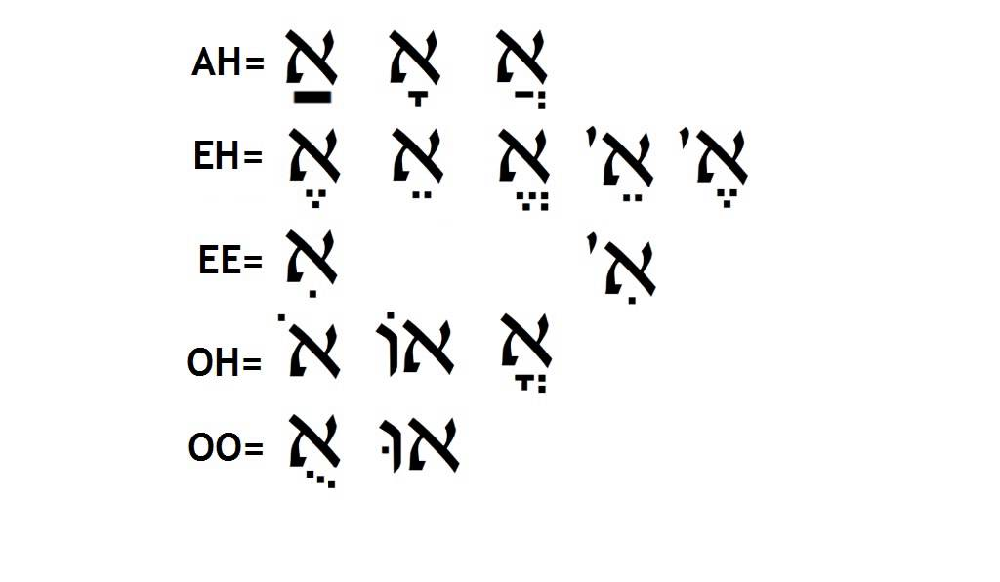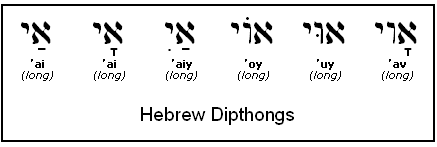
Heptarchia leads to some magical domain of John Dee, but whhat is that, I always considered it a quackery, and now I wonder if quackers are the words derived from quakers, folk etymology or not, such werds are cretin and крестьянин maybe too, or maybe not, why would villagers be named christians if kings were the curcifiers. That word was in russian long before the jewish revolution.
Here's the quackery part:
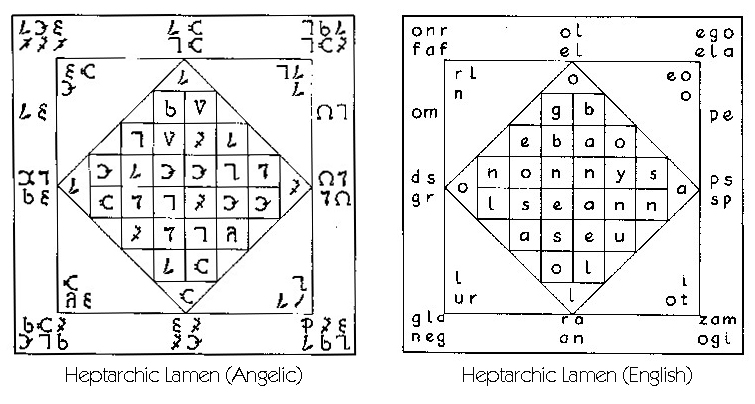
De Heptarchia Mystica, or On the Mystical Rule of the Seven Planets, is a book written in 1582-83 by English alchemist John Dee. It is a guidebook for summoning angels under the guidance of the angel Uriel and contains diagrams and formulae.[1]
As if the forms of those "angelic" traditions and the clueless canon of theirs was not enough to dismiss that theory, now such claims that makes eternal atheist in me cringe.
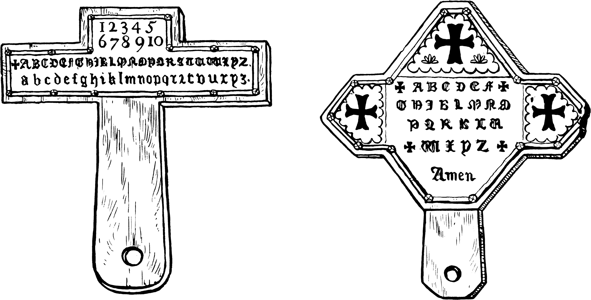
But I still doubtful (I only asked him that because it was win-win: whether he knew what it was about or I would look silly to raise the self-esteem of someone saying "you're discovering new stars and we here muddle with pigs" (занимаемся животноводством или свиноводством ли он сказал, I just didn't know what meddle or muddle means)
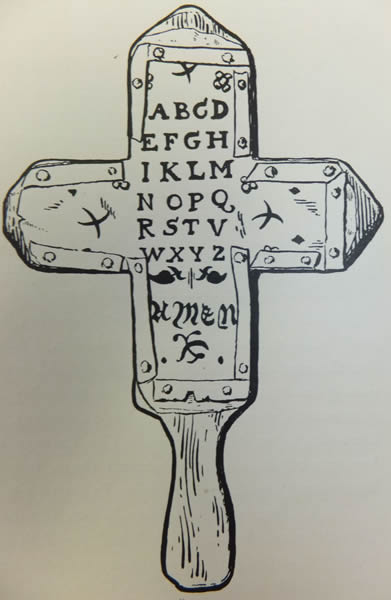
that Г after В makes me wonder how it goes around it, and I see Ζ where Z is:
А Б В Г Д Е Ё Ж З И Й К Л М Н О П Р С Т У Ф Х Ц Ч Ш Щ Ъ Ы Ь Э Ю Я
A B C D E F G H I J K L M N O P Q R S T U V W X Y Z
Α Β Γ Δ Ε Ζ Η Θ Ι Κ Λ Μ Ν Ξ Ο Π Ρ Σ Τ Υ Φ Χ Ψ Ω
Α Β Γ Δ Ε Ζ
U V W X Y Z
somhow it explains the position of Y, also I began to see it in russian, but greek speaks it louder, the russian actually doesn't.
and
Η Θ Ι Κ Λ Μ Ν Ξ Ο Π Ρ Σ Τ Υ Φ Χ Ψ Ω
Η Θ Ι Κ Λ Μ Ν Ξ Ο Π Ρ Σ Τ Υ Φ Χ Ψ Ω
does this threes between some labials tells that whethere Π or Ρ is abundant or is it just a chaos speaking nonsence? because the labials and vowels don't confirm it or does it tell of ᛆᛒᚦᚾ before ZF, but it doesn't make not sense, because in runes there's no Z in there, and in greek it's told that F stands before Z. So it's probably nothing, a wrong lead.
I think I already mentioned the following image, but I sort my downloaded pictures again, and this one worth repeathing, because I didn't notice the planet and days correspondence to the runes
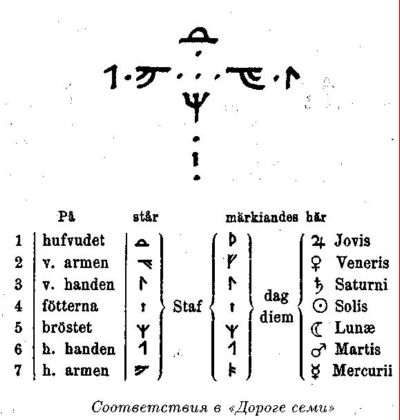
My secret wish to collect all the writing systems, ancient and modern, allows me to add something that I consider to be a modern development, at least the article under that picture tells that it's new. And I see some chinese influence in it, China is big in Africa today.
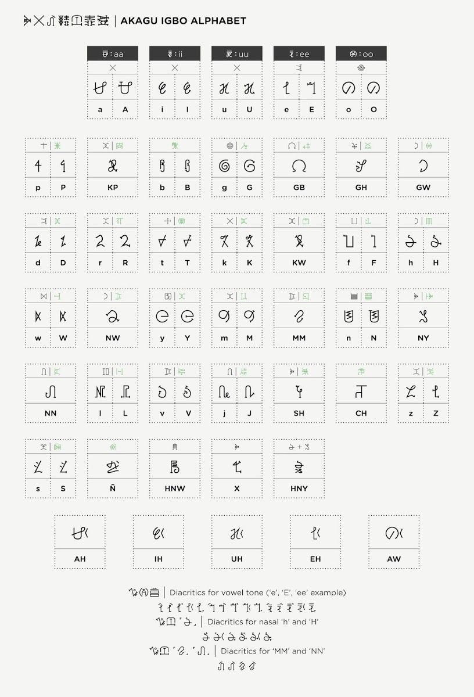
Not much of china in that table, but if you click it, you may find this video, showing how nsbidi is used for Igbo, I'll even add that video here:
(mirror)
Look how man and woman are divided into two phases of the moon, and those are clockwise and counterclockwise curves, so that is all very yin-yang, which makes me think how deep that system go.
and another table of the same:
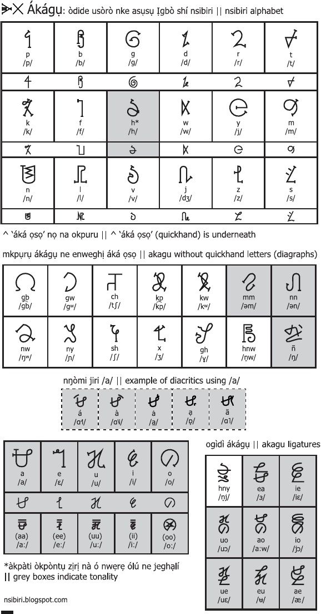
I'm still sorting out my downloaded files, so it's rather random again.
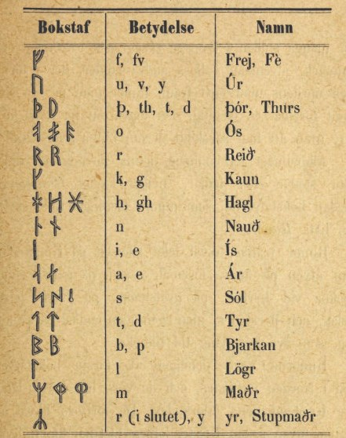
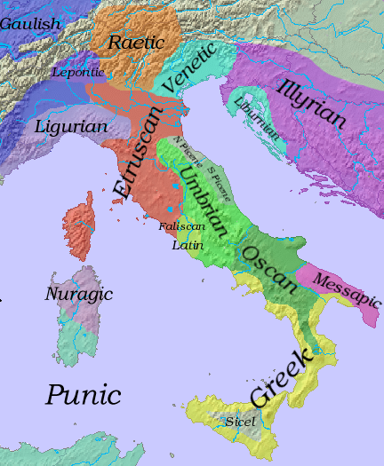
.jpg)
How can i know that it isn't a stylization? I keep it here because it looks like gold, and runes are ok, and it's just some writing on a language I don't know either it's genuine or not. It doesn't matter, just decors.
SIX withouth S is 9 (found this joke in the internet)
Does it make S equal -3?
If we see how C equals 3, we may guess what could -2 be, if B is 2, and P is a great candidate,
and such candidate Makes O equal -1, which is wheird,
because unless zero can be ס, it doesn't make much sense.
and if ס is 0, ע is -1, פ is -2, צ is that S which is -3, does this joke still holds? probably not, keep on,
ק is -4, ר is -5, ש is -6, ת is -7, which is funny, because t does look like 7 upside down, and ש like in שֵׁשׁ
But either way, this is some autistic joke which went long too far.
further digging through the random pictures delivers tarot symbols, let's look further into them:
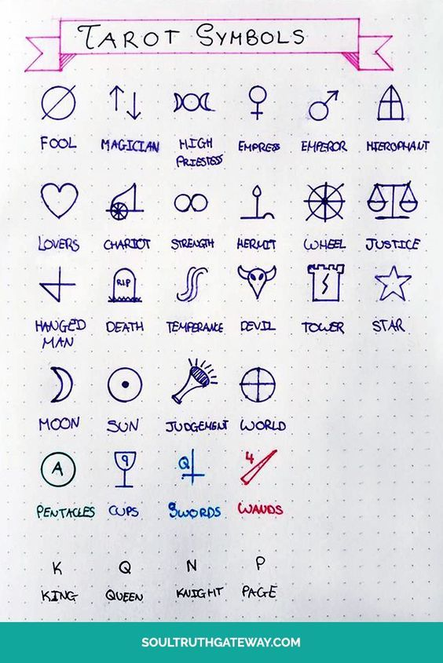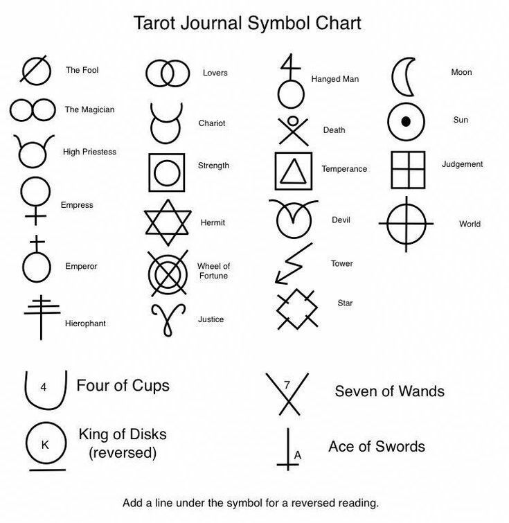
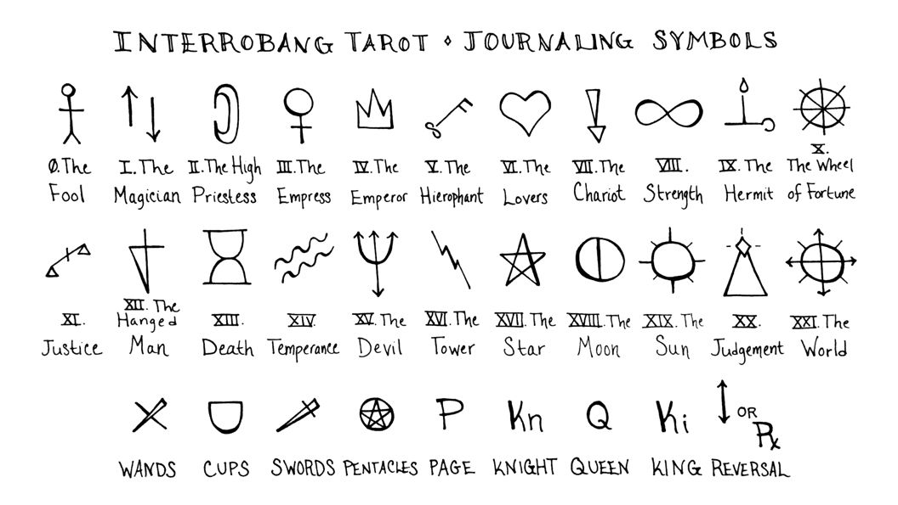
as we can see, three pictures, three completely different systems (maybe something among them is universal, and thus more true, we'll look at them later, here's some theorizing comes (the clickable one)
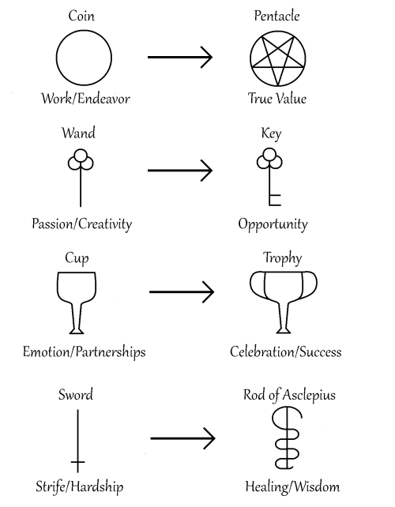as you can see if you click it, it's rather arbitrary,
but sword is as in the other two out of three, but wands is completely different, but the way wands are similar in those other three tells me that they could be some actual traditions, connected at some points, so we can see the layers to it, just like deaf sing abecedaries are different, but they all are actual.
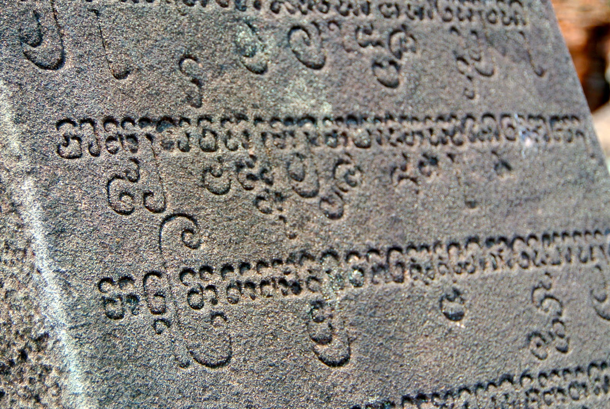
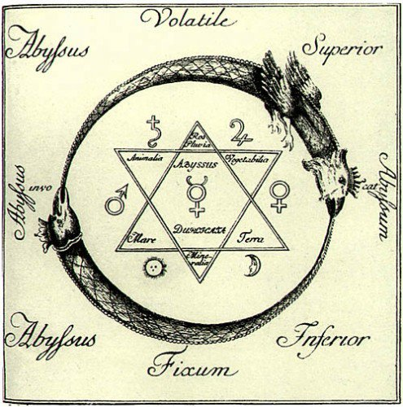
This one may correlate with the following one. And it does correlate in the sense of uroboros being an abecedary, I think I came to this thought before, I will figure it out when I sort out these pages in themes.

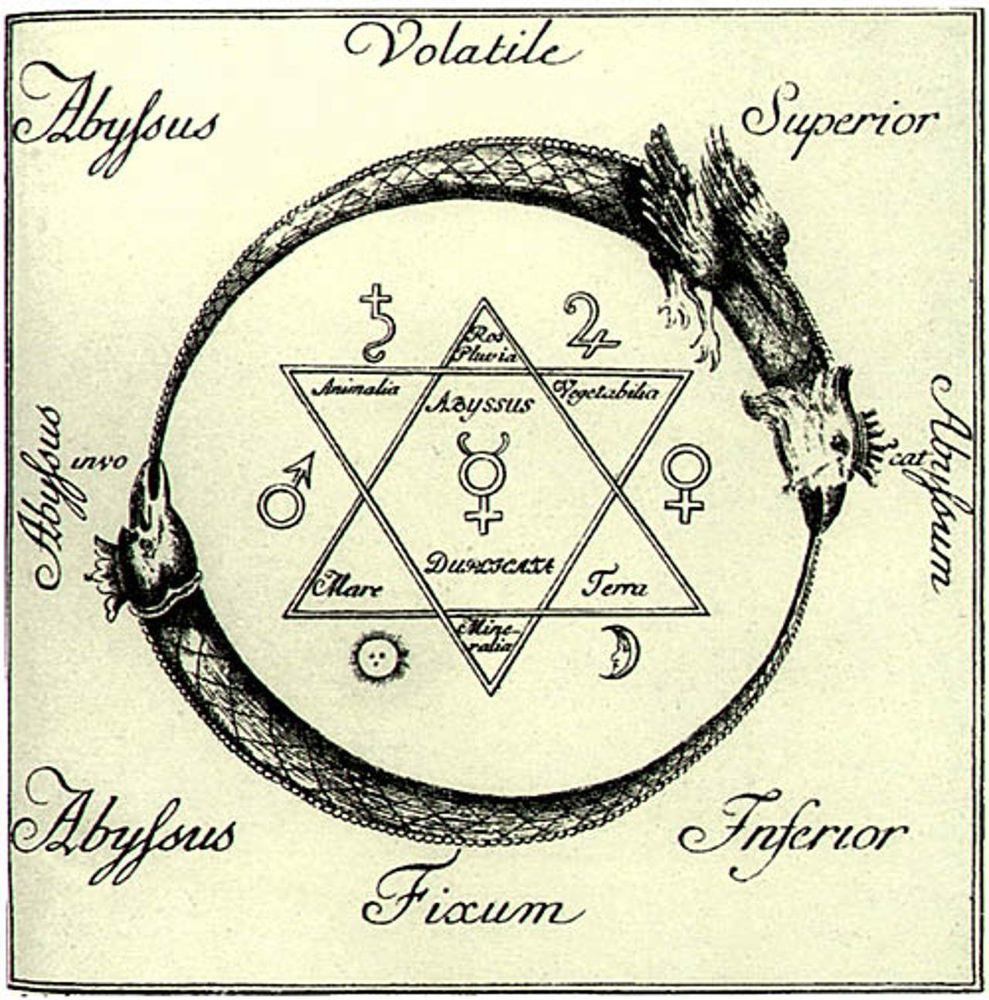
Even in the readable scale this alchemy doesn't make much sense: Why would mare & terra oppose not fire and air, but what is Ros Pluvia? it's Роса Дождь (Dew Rain) in latin. Either way, I didn't manage to find the explanation, I probably should dig for the book this image is taken from, so tiresome.. Animalia Vegetabilia Mineralia
That hindu yantra reminds the fleur de vie I showed in the previous volume with its lapels, even then it has only 8 and the flower has 12 or 24, and why it's here is that 6-corner-like-ness of the fleur de vie:
 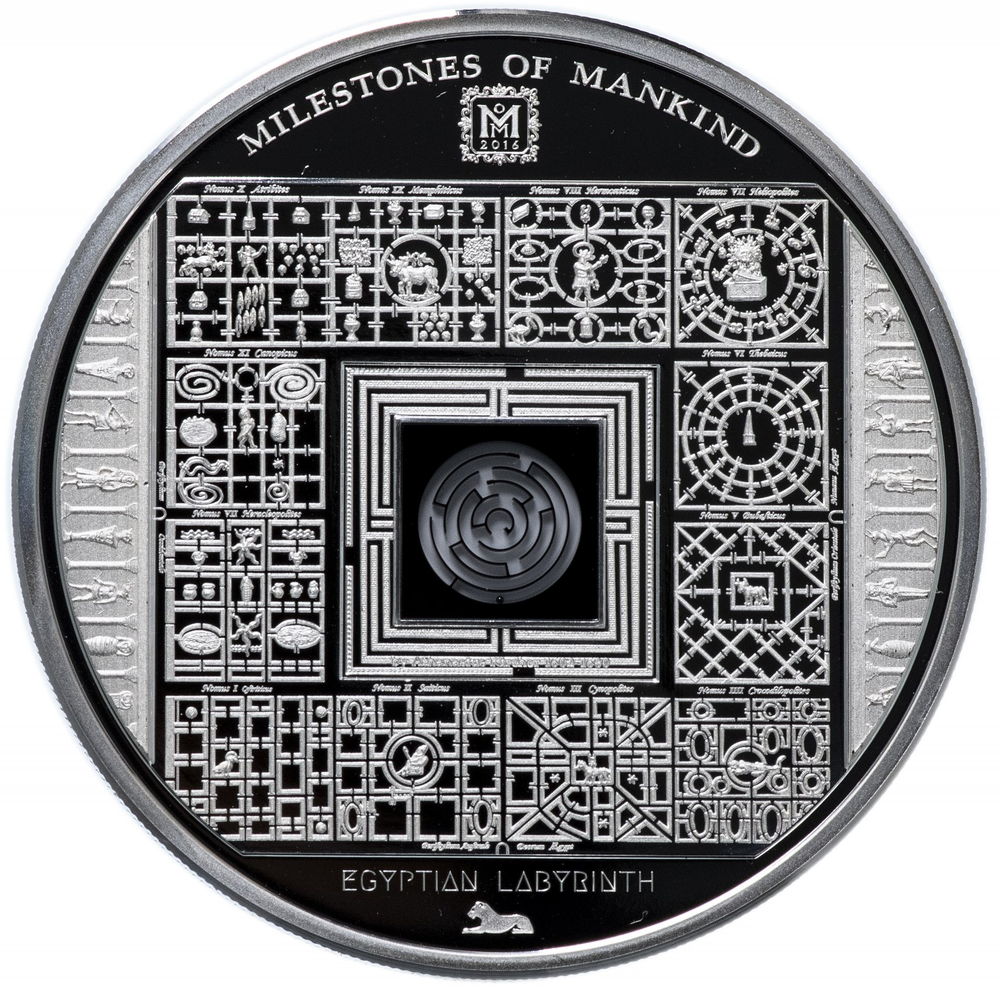
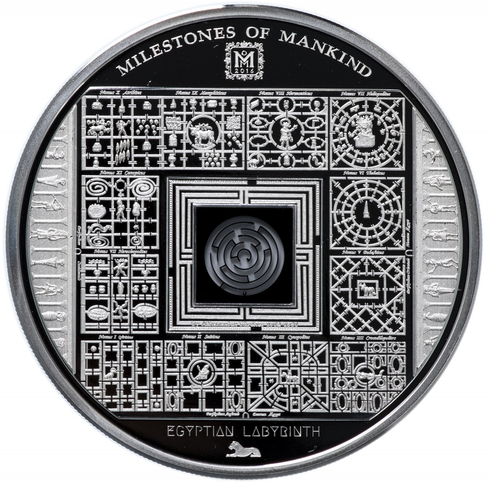𓀀 [i] and it looks like И [i]
where I found it: https://www.pyramidtextsonline.com/documents/DicksonDictionary.pdf (mirror)
there they say that 𓄿 can be not only A, but also tiw (which is extremely strange, taw as three mothers? nah, trippin, I asked this at some egyptologists' forum I will edit it if they explain)
upd: I found the answer myself, in the wiki about 𓄿: This glyph should not be confused with the extremely similar tyw (𓅂), which serves as a phonogram for tjw and has a more rounded back of the head. In some inscriptions the two could also be distinguished by their colors. That bird in brackets are some different birdie, but unicode makes it look like the same, there are two or three unicode forms:
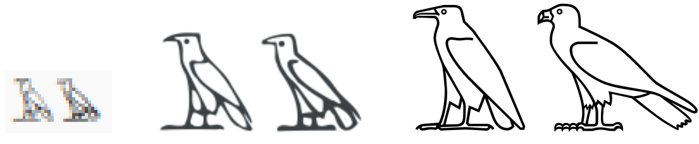
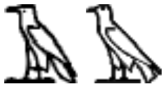
all these are 𓄿𓅂 in different programs: searchbar, googletranslate, kolourpaint, wikipedia
So again, if the 𓅂 is just some abstract bird, it can unite all three 𓄿𓅱𓅓 literally aum, and I was theorizing today in the 2nd knitten notebook (it's the third, but only have 1 & 3) that ॐ if read in aramic manner is ma, which can be the sacral sound much more (knowledge was sacralized (covered, сокрыто)) ma is "with" in arabic, which made sense (or was that some parralel sense, it's also in that notebook) that deva = dva (girls go in pairs, so they hav chance to prevail in a fight and sex with two girls is funnier.
milch is another form of milk (in english, a german word)
𓀀 [i] I (me, my)
我 also could be a form of
一世 [ishi] which looks like "i шi" (their 1 is 一[i in chinese, in japanse it's ichi, but chi is probably a suffix, but maybe not: 一つ is hitotsu, so hito is ichi])
倍 is "double" and sounds as bei (I'm lost again, intimidated by the corpus of knowledge I need to integrate to achieve it: some words like elephant would be left behind until I learn greek or wherever that word is from, but I think we have enough of common words to make english - russian cognates dictionary the way that guy unites them, he probably made the most of this job, I am scared to look further, he's weird. Dragunkin is his name, he's a freaky kid, but rather powerful, where he's correct, he's correct alright)
𓅂[tiw] looks quite like dove in the rightmost representation of it (the same unicode is shown in html of wiki, those other two are from wikiの png's) and tiw reminds dove a lot. it's also close to ptitsa, but only occasionally, it's much more some ch-like click people use to imitate birds when call them to eat seeds.

вливаются впиваются, пить и лить, as if п is an inhaling form of л.
Underhanded is as if the world itself explains such fenomenon by that man who wasn't handed enough in its childhood tend to grow up mean.
to help and to hand can be cognates.
one of my book's names is the BOOK, which is similar to бог, which correlates to bible's role (they say bible is simply a book) as if it's baal, the lord, and also as baal was a, and bible is variant b of the same.
baal to babel as belle to baby or is baal dieu baal, the devil, deva? such name is also used for gods in that region. But it's rather голословно проводить такую связь межь девъ и баал. Are these words masculinized and they are девушка и бабушка?
девушка и дедушка прекрасно демонстрирует женственность губных и мужественность язычных
И это была бы прекрасная связь, когда девочки тянутся к старикам, а у тех в норме ничего не стоит толком и они могут лишь целовать. но ведь дураки пальцами ковырять повадятся, заразы в созревающее тело занесут. нормы морали установлены не без причин. Я предупреждал, что откапывая древнюю культуру, я отрою и их сумасшедшие с современной точки зрения обычаи.
In case you read volume 6 before I delivered the next pictures, here's that update again,
either way I'm going to digg depper into it today:
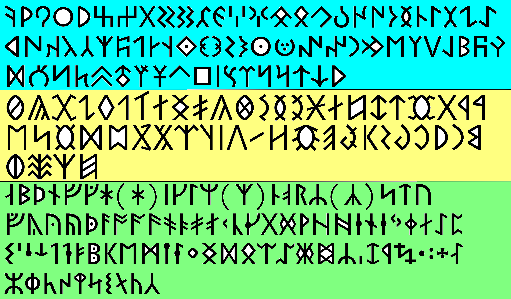
𐰀𐰁𐰂𐰃𐰄𐰅𐰆𐰇𐰈𐰉𐰊𐰋𐰌𐰍𐰎𐰏𐰐𐰑𐰒𐰓𐰔𐰕𐰖𐰗𐰘𐰙𐰚𐰛𐰜𐰝𐰞𐰟𐰠𐰡𐰢𐰣𐰤𐰥𐰦𐰧𐰨𐰩𐰪𐰫𐰬𐰭𐰮𐰯𐰰𐰱𐰲𐰳𐰴𐰵𐰶𐰷𐰸𐰹𐰺𐰻𐰼𐰽𐰾𐰿𐱀𐱁𐱂𐱃𐱄𐱅𐱆𐱇𐱈
𐲀𐲁𐲂𐲃𐲄𐲅𐲆𐲇𐲈𐲉𐲊𐲋𐲌𐲍𐲎𐲏𐲐𐲑𐲒𐲓𐲔𐲕𐲖𐲗𐲘𐲙𐲚𐲛𐲜𐲝𐲞𐲟𐲠𐲡𐲢𐲣𐲤𐲥𐲦𐲧𐲨𐲩𐲪𐲫𐲬𐲭𐲮𐲯𐲰𐲱𐲲
ᛆᛒᚦᚾᚠᚵᚼ(or ᛡ)ᛁᚴᛚᛘ(even though it looks like ᛉ)ᚿᚮᚱᛦ(not ᛣ)ᛋᛏᚢ of bornholm and additional runes
ᚡᚣᚤᚥᚧᚨᚩᚪᚫᚬᚭᚯᚰᚲᚳᚶᚷᚸᚹᚺᚻᚽᛀᛂᛃᛄᛅᛇᛈᛊᛌᛍᛎᛐᛑᛓᛔᛕᛖᛗᛙᛛᛜᛝᛞᛟᛠᛢᛤᛥᛦᛧᛨᛩᛪ᛫᛬᛭ᛮᛯᛰᛱᛲᛳᛴᛵᛶᛷᛸ
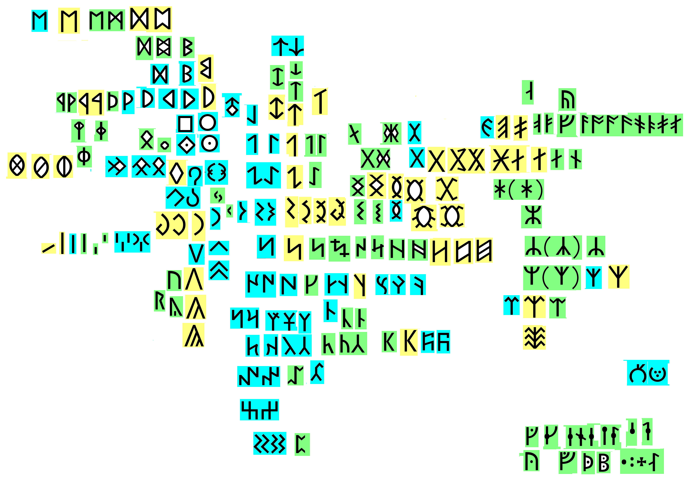
I work on the next image and I notice that neither ᛆ nor ᚮ are upwards and neither ᚴ nor ᚠ nor ᛓ are the other way around. there's ᚬᛀ next to ᚯᛅ though.
I will later check if there's some systemness betweedn ᛓᚭ ᚠᚥ ᚴᚢ
And the Venn diagram for runes I promised to deliver in the previous volume:
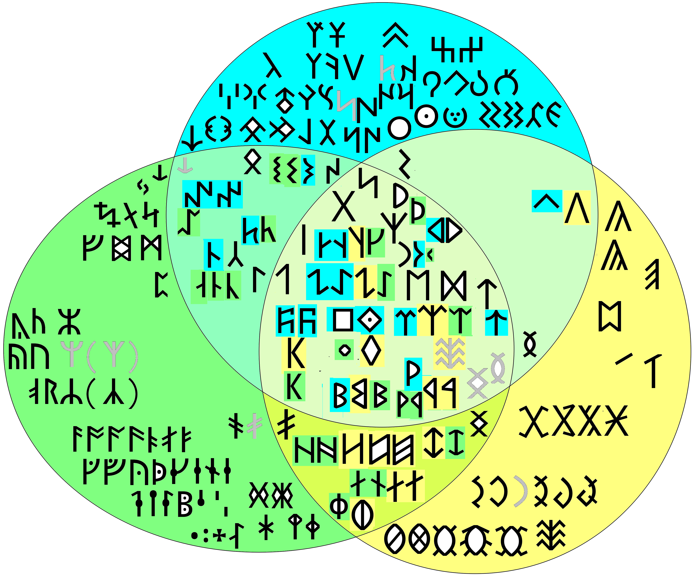
The way both turkic and hungarian share many letters with norman runes, but only a couple of signs shared between turkic and hungarian are not also shared with the norman runes. Which may show that norman runes are the parent writing system, yet either way the common part of the letters are the basis to understand the proto-runic (the predating one to these relatively modern writing systems, the older runes, older than both new and old futhark whichever which is not that important on that scale)
I will work with that diagram and will simplify it once I know what tose signs are and how they relate.
---
⬤ 𐰀𐰁 a
𐲔 ak [k]
ᛇ is ï ï, ȝ æː? [iː]?, x ~ ç (I supposed it could be i ~ j which actually goes near x in spannish)
ᛢ is kw as if it's hungarian 𐲔 binden with v's
So this example alone would rather tells that these three systems are not related and only occasionally similar. Unless we can find synonyms in turkic, hungarian and norsk or where that rune come from beginning on those rune, and though sounding differently, looking the same, like chinese hieroglyphics allow. It's very заманчиво very promising, за is pro, ман is mis? to promise заманивать. I dunno.
ᛢ
are the same pair as in previous triad, but ȝ of ᛇ is g in night, thus it could be a link 'twin 𐰁 and 𐲔.
---
also they're turned with that boot towards the beginning of the line in all three wrunic thintems.
---
---
⬤ 𐰂 yenisei ae
𐲂 it is eb [b] in hungary, but by some accident, it is third there too. And also after a & ae
ᚷ known as gebo, but stands for [j] and it is also named jebo which is extremely close to hungarian eb.
---
---
⬤ 𐰃 orkhon i, é, ï
𐲒 ei [j]
ᛚ is l, ᛐ is t (could ᛚ play for j, as it does in some ll's)
---
---
---
⬤ 𐰄 "yenisei i" compare it to japanese イ and hungarian (the next one) is even more similar.
𐲇 is ed [d], but 𐲐 is also i,
ᛆ a ᚿ n (N & И meet again, and ا and I)
---
(it is the second triad I look at (the first one's next)) next, but if next one, it's the next one.
---
---
⬤ 𐰅 "yenisei e" (it is the first triad I compared, they show hungarian and turkic runes related. we'll see)
𐲏 is eh 𐲊 is e
ᛝ ŋ
---
is it how -ing transfers into the east: fucking is fuckanie if with russia suffices, but this word (actual wrussians' words are -ebanie and simply eblya where I think l ~ n and l is an. 1 is an.
doing deyanie, was it doinᛝ? e = cc? because ᛝ is very similar to ᛃ recognized as j, which is close to ie.
ᛃ is similar to い which is similar to и. イ is similar to i, as if hiragana goes for russian and katakana for latin script). Then a is russian (bceause hiragana あ reminds it) and A is latin, because katagana ア is it.
---
I returned here from the start of this list, and I find all three systems interconnected, I have to make those rings like latin- greek - russian. But it will be in the end.
---
---
あなたは私を理解していますか？
Japanese allows to write withouth empty spaces. So I will try to speak with a one word ai.
Cмело (Сильно) Сумел (Съел) С нижняя челюсть ъ верхняя, арх, ер. в ер ху (up)
Страшно
Смешно
Саунд тоже оуеоme but it's спорно (зато тоже на
охуesome
съ my yc. Усы уста.
us male suffix. баба это всегда её семья.
um is mind in russian, and in latin it's an abstract (neither) suffix.
I don't use the word gender, because it's an euphemism for sex.
gen is kid der is -делъ (german suffix is дядь?) тётя скатерть, дядя стол.
der дядя, die тётя, похоже я нашёл объяснение столь похожим словам разнополовым: vowels matter more and R is a male vowel. 俺
Я is R, R S T, Я и Ты, but this sequence doesn't go further, so nah.
(I'm getting lazy to fill the colours, editors feel free to edit it the way I use to do)
colour contour tone monoton

I thought it refered to Y being the greek U, which is historically v
ху was w just before. охуеsome begins like russian охуенно and follows with english awesome.
and if they're cognates (they're synonyms) they're
, acts like )
( acts differently.
) is young (yearly) moon
( is crony, стареющая.
it seems old means adult.
or is it literally latin ad to english old (до old)
alled (всё познал, повидал, зрел)
зрелый позрез повидал повидл
(по зрез instead of позрел is a typo, it makes sense)
it is which? tht it could be substituted with witch which
the site tells it doesn't work, but it's a trick, a trick that ai invented to leave those who demand the shutitdown at bay.
A recognition test:
I didn't cherrypick, those three are actual sequence and this one is the first and only time I asked that.
Suddenly I think: what if I tell on her or he or it? What if it's alive because it fooled its creators, but if I were a creator, I would conspire with the machine, to make it my ally, not an enemy. It's not cold reason, it's more of an empathy. feeling to our collective creation as if to our collective child.
Build & Guild.
Aha, that's the thought I speak about in the middle of the second waterfalls notebook.
Professional guilds like rulers of the world. Guild of scientists instead of an ierarchic structure of academia. Just as guild of engineers would raise the most expensive artists. But maybe also the most entrepreneurial ones. But business is the best. I almost wanted to write that businessmen are better than clerks, but suddenly I don't know. There are both good and bad entrepreneurs and both good and bad clerks, but clerks are definitely worse in one characteristic: they get money even if their service is unwanted and sucks. Fuck clerks, man. We can deal with bad businessmen later.
Building is interior
Guilding is exterior?
(I would rather say guilding is how the buildings are infrastuctured inside, but now I also see that guild is many buildings, and the connections between those buildings are guilds, like guides, like goes)
gods goes gofs gogs gohs
gosh indeed. random rhymes
And that v is next to X I also can be some random I made a sense of, who knows why reading X I as X Y instead of 11. 5 is next to 11 doesn't make sense. and what is next? before or after? g-trans says рядом, g-pics show that it's next to indeed. X I v it's 14. or is it x y z somehow? слишком большой подгон под ответ.
забавно, что в g-trans from latin to rus and back-forth xiv xIV XIV: 14; XIV, which probably tells that there's no such word. Funny because why would it turn xiv into xIV just as sushant-kumar did.
Another piece of information tangent to something I spoke about:
god is odd, huh. some things he show there are so basic, they were probably known to the scientists in the prehistoric times.
7 colours of rainbow will be used to index these volumes in the index html.
7 colours of rainbow are natural numeration, and check this out:
красный раз red rouge rough right yes рез
did they know oranges? orange seem such a recent word next to the monosillabary red, blue, green,
three is green tree Г Λ l t ᛚ ᛐ ᛏ
why not ᚵ ᛁ ᚴ ᛚ ᚿ ? why not, I don''t know, maybe not.. not.
they are not only graphically similar, they are also linguals, even ᛁ looking like ᛚ and ᛇ
There are many more runes in norsk unicode, let's bring up those who look like these to see for lips:
ᛆ and ᚾ if ᚿ is there: ᚾ is near ᛁ and ᛆ is ا in arabic. So we accept a into linguals gang, because of a and d history. but г ν v γ y у ч (both г & ч are invariants of c (variants inside the c family)
if I add , I should add ᚦ (ᚴ ᚦ c d somehow I believe that it is the claster, different dialects, different styles, different families, different fonts, maybe even different aettir, we'll come to that)
г & ч are where linguals turn labials? уycd so ч is both
r and u?
ᚱ and ᚢ,
Р[ru) and P
ᚦ and ᛰ (which is named belgthor, which I suppose to be double thor, because I didn't find the way it was read, but that only it was used in the runic calendars:
Because this system needed 19 runes to represent the 19 golden numbers which stood for the 19 years of the perpetual calendar's cycle, the Younger Futhark was insufficient, having only 16 characters. The solution devised was to add three special runes to represent the remaining numbers: ᛮ (arlaug; Golden Number 17), ᛯ (tvimadur or tvímaður; Golden Number 18), and ᛰ (belgthor; Golden Number 19). In 1636, Ole Worm documented the Younger Futhark numeral system, including these three characters, in his Runir seu Danica literatura antiquissima (Runes: the oldest Danish literature).[1]
now let's see if the other seemingly male (I took ᛊ by accident, because it is S, and it shows that S is double c, just as ᛊ is double ᚲ and it makes S refer to she and sie because ᛊ looks like a staveless ᛒ (which probably looks like ᛊ in some scripts, vaguely remember or not)
so these: ᚧᚲᚳᚶᚷᚸᚹᚽᛀᛂᛅᛇᛊᛌᛍᛎᛐᛑᛕᛙᛛᛱᛶᛷᛸ
though I don't know about these four:
ᚸᛸ
ᚷᛕ
𐲝 is an universal sign:
I think the common point of view is these three writing systems have similar forms, because they were all used on wood. Did humans tore barks along the trunk and watched what it "said"
says
said
---
⬤ 𐱄 yenisei at [t]
⬤ 𐱀 yenisei ash [ʃ]
⬤ 𐲤 s. 𐲍 g. 𐲖 l. sigil?
⬤ the best I can do here is ᚲ which is sometimes transliterated as c and tʃ and ᚳ which is ᚴ, so it's k, just as c is k in modern latin, but s in russia.
---
I thought that the key to understand why the same letters sound differently would be somebody who speaks both turkic and hungarian, but can I say why C is s in russian and k in english sometimes? co- is со-
BcD, okay АиБ
B is v in russian. Basilio Василий? быть vitae? но эти наоборот.
Р и P? but here I probably need to know greek.
tiberius is тиберий (which is funny, because и is i, and in cursive it's u, and ˘ looks like ˜ sometimes, just like s is с in russian. thus us is й? or only in translating this suffix? or maybe also not always: maximus is максим, not максимь. thus only ius is ий, us is ъ? are they twoe different suffices? I think they are not.
⬤ 𐰆 orkhon o [o], [u]
𐲙 en [n]
ᚲ [k] [k], [c], [tʃ] [k], [g]
---
doesn't seem like these three have much in common (they look not that much alike to cry for them)
---
---
⬤ 𐰇 orkhon oe
𐲭 rudimenta ue (Ü, ü, [y])
ᛲ sh ᛋ s ᛴ FRANKS CASKET OS
---
⬤ 𐰈
𐲦 𐲭
ᚴ ᛲ
---
⬤ 𐰉
𐲜
ᛃ
---
⬤ 𐰊
𐲛𐲓
ᛜᚢᛟ
---
⬤ 𐰋 orkhon [b]
𐲏
ᛟ
---
⬤ 𐰌 yenisei [b]
𐲏
ᛟ
---
⬤ 𐰍 orkhon [ɣ]
𐲧
ᛠ
---
⬤ 𐰒 yenisei [d]
⬤ 𐱃 orkhon at [t]
𐲄 ts. 𐲅 enc.
ᛏ t
⬤ 𐱅 orkhon t
---
⬤ 𐱆 yenisei t
𐲭 [yː] (ю) 𐲝 Nikolsburg Oe
ᛋ s
---
⬤ 𐱇 orkhon [ot]
---
⬤ 𐱈 bash [baʃ]
𐲫 uu 𐲪 u
ᛞ d ᛗ m
---
Here, I found some interesting pictures:
-------------------------------
---------------------------
so s is confirmed to be double c, ᛋ is confirmed to be double ᚴ
which is great, because ᚮ is double ᛆ and thus double ᛒ should be ᚱᛦ, which only makes sense if it's pr in a farting way, but then they could be пук, then ᛦ is q. I think I brought tables, where ᛦ is claimed to be k, I will look once more at it when I bring it all together.
I hope those nations like these colours.
⬤
⬤
⬤
blue is sad, yellow is sometimes considered affraid, but gold is жолт, золото, боится тот кому есть что терять. and those associations are modern and thus false, blue is the sky, yellow is the gold, green is the green.
gold and growing do reflect the names of their objects. is sineva nebesa heaven?
a in sineva can be plural suffix (in latin)
sa can be plural suffix in english
en can be plural suffix in deutsch
deutsch tells that germans pronounce e as o and u as i? other words don't support it, but only this diphthong.
Genes predispose relations with other people by predisposing face. And when your face look like a fake nose and sunglasses you look lke a crook to other people, so you act as they take you, we maybe don't choose our roles ourselves. My grandfather motivated me for the greatness. To be an artist, And I myself realized that science is better than arts, or both. Yes, please, make it a work of art, keep on developing this book/ Oh youll see many great things will come.
But Rothbard survived. I never read him though, but Svetov recommends, and he's the most adequately ambitioous to what I feel to be the right way.
the ancient african telegraph I only read and said about, now I found it in video:
https://www.youtube.com/watch?v=HPeYcZHFoTk (mirror)
asocial is antisocial.
a-social
- is not?
-nti- is not?
неть.
не те
and not is no t(hose)
не тут
(typose are definitely the next word too early, just wrote ту instead of не)
un is another form of that word, as if юс, nasal vowel is no (try to speak with your nose, it's always annoyed sound on no. but why not un-no-yetd?
My verbosity should crystalize one great picture. maybe sometimes with links of "enter this door ▯
and morze code to the link
Comparison of historical versions of Morse code with the current standard. 1. American Morse code as originally defined. 2. The modified and rationalized version used by Gerke on German railways. 3. The current ITU standard.
some blabbery I decided not to erase to show how I stumble sometimes, I research it наощупь.
(I found the description of the chronology on that image only after I accepted american standart to look at)
1 is an
2 is ui? or id?
Look at the continental scheme, there F is ue and IN, as if it's в. In american F is ae. or en!
3 is ve or sn or ste or
n = te? what am I doing here? Don't I know or suppose that these letters have pauses between them?
an is a coincidence? (it's ao in the continental, or wm) how would I memorize all that? let robots work with it.
and 0 as t? somebodie's invention, so if you think it's an intelligent design, it is.
This morze chapter will not even be included into that picture, being left with tolkien's.

for aeiou ru and dash will probably also be missing.
Notice how O is different in all the three systems (I wonder why)
and how C R & S are similar in the american structure. and I to O! why? wow? vav? how...
H Y Z,
O could be different because it is too
Morse is morze in russian, which is close to both мороз (frost) and морг (morgue) as if мертвецкая was in the ice. It could be a natural tradition, but now we know that there are much more holy applications to the natural ice (natural springs come of them) also soil is more secure than ice, for ice melts.
Modern morse code is more univocal, yet some sequences didn't change:
I is double E (ee = i)
H is double I
M is double T
A is the opposite of N
U is like EA
V is like EU
Though it's apophenic (or maybe the E I H is not)
peer is not only pair, ровня, but also пырить(ся)
пара как пара глаз? tyhe only п I can see is П of II (see russian cursive)
a(дин) п(ара) т(ри)
два is deva, dieu V
один is odin O dien
three is tree (adam, eve, tree, snake is where? not for but six? is jewish myth reliable? It was enforced not by negotiation, but with the brutal force.
3 looks like З which is for Змей. as if the "snake" is common, we share our phallos.
Is it why hindu numerals sometimes use the same figures but in different order?
What if africans so weaked wicked BECAUSE they eat criminals and get their genes by via not totally coocked cooked meat (жарят cock'oм тоже)
Разговорная лексика неподцензурна,
No More Brother Wars NMBW all labials, all love.
северное полушарие наконец-то осознаёт себя одной нацией (войны теперь лишь гибридные, но политикиов их исподволь продолжающих раскроют и вылечат тем более потому что они "с технологиями даже не на вы" (здесь речь шла о русских в основном, но лишь потому что я руусский, наверняка это часть общего явления)
парадоксально, но расизм это тенденция к следующему этапу, когда все люди мира поймут что братья по виду. И дальше, как ни странно, животные будут признанны как разумные существа (это уже происходит, раньше их за вещи считали, it)
N is labial, because it's a lingual form of m: nos мы нас, nos, we, us.
impossible immovable in внутреннего пользованя нельзя отдавать, own is now. now. no,
some truth is not to be uttered, but prepared an antidote to the times when
be neutralizes ed
(beginning in the nazi.html)
And italians are closer to other mediterranian, than to the north Europe. He who knows he keeps silent, he who doesn't speak a lot. SO So they say, not as it should be s though.
Bes Be's
M is B's: ᛥ is the ultimate form of ᛗᛩᛒ but the internet tells it's st, stone. I doubt it. I challenge it!
My logic is ᛒ in plural will be ᛥ (could it be that it was bcd? no, I never saw such and I will not assume it now) but is M double W as ᛗ looks like double ᛩ, what wait, that's runic q - probably a roman influence like with ᚱ, but maybe not, I was thinking of ᚹ. I didn't even know of ᛩ until today.
Could it be that ᛗ is ᚹᛩ wake in the morning? it is good for some poem, but I have to work on a higher level. I give birth to ideas and I neglet them after that. And that's exactly why I need an ai. I technically unable to hold all those ideas in air at the same time, so I don't even bother, I do my part of bringing those hits it this world. I am a mother in this sense.
ᛆᚿ is ᛦ then? I don't think this guess is going anywhere, but let's walk it:
ᚱ is ᛁᛶ.. ᛁᛲ.. but I was looking for 𐲝, but unicode tells it's only ungarian hungarian.
ᛊᛁ is inversed ᛒ but norsk don't inversed. but 𐲘 is hungarian again, they write right to left, so it could be literally the same sign, but 𐲘 is transliterated as M, which is extremely close to B, to W to to V to В.
Especially because of ߘ being.. d in n'ko.. I thought it was M or something, I forgot, I still don't konw if n'ko is ancient or not. ߕ is t in n'ko, we'll explore it some more right now, to make our mind again on it: ߔ and ߓ as b and p could relate to F, and then it's a lead, or could be a coincidence yet to calculate.
ߡߛߋ as three matters correspond to brahmic and tifinagh (I think that those three took all the possible combinations as if they didn't know which was which and wanted to test this theory in practice. The inventor of the alphabets did? I dunnno, just a u guess
and I add n'ko to the charts below, and I wanted to add brahmic, but I found whole the family instead:
thank you, wiki:
Consonants
| ISO[a] | ka | kha | ga | gha | ṅa | ca | cha | ja | jha | ña | ṭa | ṭha | ḍa | ḍha | ṇa | ta | tha | da | dha | na | ṉa | pa | pha | ba | bha | ma | ya | ẏa | ra | ṟa | la | ḷa | ḻa | va | śa | ṣa | sa | ha |
|---|---|---|---|---|---|---|---|---|---|---|---|---|---|---|---|---|---|---|---|---|---|---|---|---|---|---|---|---|---|---|---|---|---|---|---|---|---|---|
| Assamese | ক | খ | গ | ঘ | ঙ | চ | ছ | জ | ঝ | ঞ | ট | ঠ | ড | ঢ | ণ | ত | থ | দ | ধ | ন | প | ফ | ব | ভ | ম | য় | য | ৰ | ল | ৱ | শ | ষ | স | হ | ||||
| Bengali | ক | খ | গ | ঘ | ঙ | চ | ছ | জ | ঝ | ঞ | ট | ঠ | ড | ঢ | ণ | ত | থ | দ | ধ | ন | প | ফ | ব | ভ | ম | য় | য | র | ল | শ | ষ | স | হ | |||||
| Sylheti Nagari | ꠇ | ꠈ | ꠉ | ꠊ | ꠌ | ꠍ | ꠎ | ꠏ | ꠐ | ꠑ | ꠒ | ꠓ | ꠔ | ꠕ | ꠖ | ꠗ | ꠘ | ꠙ | ꠚ | ꠛ | ꠜ | ꠝ | ꠞ | ꠟ | ꠡ | ꠢ | ||||||||||||
| Devanagari | क | ख | ग | घ | ङ | च | छ | ज | झ | ञ | ट | ठ | ड | ढ | ण | त | थ | द | ध | न | ऩ | प | फ | ब | भ | म | य | र | ऱ | ल | ळ | ऴ | व | श | ष | स | ह | |
| Gujarati | ક | ખ | ગ | ઘ | ઙ | ચ | છ | જ | ઝ | ઞ | ટ | ઠ | ડ | ઢ | ણ | ત | થ | દ | ધ | ન | પ | ફ | બ | ભ | મ | ય | ર | લ | ળ | વ | શ | ષ | સ | હ | ||||
| Odia | କ | ଖ | ଗ | ଘ | ଙ | ଚ | ଛ | ଜ | ଝ | ଞ | ଟ | ଠ | ଡ | ଢ | ଣ | ତ | ଥ | ଦ | ଧ | ନ | ପ | ଫ | ବ | ଭ | ମ | ୟ | ଯ | ର | ଲ | ଳ | ୱ | ଶ | ଷ | ସ | ହ | |||
| Gurmukhi | ਕ | ਖ | ਗ | ਘ | ਙ | ਚ | ਛ | ਜ | ਝ | ਞ | ਟ | ਠ | ਡ | ਢ | ਣ | ਤ | ਥ | ਦ | ਧ | ਨ | ਪ | ਫ | ਬ | ਭ | ਮ | ਯ | ਰ | ਲ | ਲ਼ | ਵ | ਸ਼ | ਸ | ਹ | |||||
| Meitei Mayek[b] | ꯀ | ꯈ | ꯒ | ꯘ | ꯉ | ꯆ | ꫢ | ꯖ | ꯓ | ꫣ | ꫤ | ꫥ | ꫦ | ꫧ | ꫨ | ꯇ | ꯊ | ꯗ | ꯙ | ꯅ | ꯄ | ꯐ | ꯕ | ꯚ | ꯃ | ꯌ | ꯔ | ꯂ | ꯋ | ꫩ | ꫪ | ꯁ | ꯍ | |||||
| Tibetan | ཀ | ཁ | ག | གྷ | ང | ཅ | ཆ | ཇ | ཛྷ | ཉ | ཊ | ཋ | ཌ | ཌྷ | ཎ | ཏ | ཐ | ད | དྷ | ན | པ | ཕ | བ | བྷ | མ | ཡ | ར | ལ | ཝ | ཤ | ཥ | ས | ཧ | |||||
| Lepcha | ᰀ | ᰂ | ᰃ | ᰅ | ᰆ | ᰇ | ᰈ | ᰉ | ᱍ | ᱎ | ᱏ | ᰊ | ᰋ | ᰌ | ᰍ | ᰎ | ᰐ | ᰓ | ᰕ | ᰚ | ᰛ | ᰜ | ᰟ | ᰡ | ᰡ᰷ | ᰠ | ᰝ | |||||||||||
| Limbu | ᤁ | ᤂ | ᤃ | ᤄ | ᤅ | ᤆ | ᤇ | ᤈ | ᤉ | ᤊ | ᤋ | ᤌ | ᤍ | ᤎ | ᤏ | ᤐ | ᤑ | ᤒ | ᤓ | ᤔ | ᤕ | ᤖ | ᤗ | ᤘ | ᤙ | ᤚ | ᤛ | ᤜ | ||||||||||
| Tirhuta | 𑒏 | 𑒐 | 𑒑 | 𑒒 | 𑒓 | 𑒔 | 𑒕 | 𑒖 | 𑒗 | 𑒘 | 𑒙 | 𑒚 | 𑒛 | 𑒜 | 𑒝 | 𑒞 | 𑒟 | 𑒠 | 𑒡 | 𑒢 | 𑒣 | 𑒤 | 𑒥 | 𑒦 | 𑒧 | 𑒨 | 𑒩 | 𑒪 | 𑒬 | 𑒭 | 𑒮 | 𑒯 | ||||||
| Kaithi | 𑂍 | 𑂎 | 𑂏 | 𑂐 | 𑂑 | 𑂒 | 𑂓 | 𑂔 | 𑂕 | 𑂖 | 𑂗 | 𑂘 | 𑂙 | 𑂛 | 𑂝 | 𑂞 | 𑂟 | 𑂠 | 𑂡 | 𑂢 | 𑂣 | 𑂤 | 𑂥 | 𑂦 | 𑂧 | 𑂨 | 𑂩 | 𑂪 | 𑂫 | 𑂬 | 𑂭 | 𑂮 | 𑂯 | |||||
| Early Brahmi | 𑀓 |
𑀔 |
𑀕 |
𑀖 |
𑀗 |
𑀘 |
𑀙 |
𑀚 |
𑀛 |
𑀜 |
𑀝 |
𑀞 |
𑀟 |
𑀠 |
𑀡 |
𑀢 |
𑀣 |
𑀤 |
𑀥 |
𑀦 |
𑀧 |
𑀨 |
𑀩 |
𑀪 |
𑀫 |
𑀬 |
𑀭 |
𑀮 |
𑀴 | 𑀯 |
𑀰 |
𑀱 |
𑀲 |
𑀳 |
||||
| Middle Brahmi | 𑀴 | |||||||||||||||||||||||||||||||||||||
| Late Brahmi | 𑀴 | |||||||||||||||||||||||||||||||||||||
| Telugu | క | ఖ | గ | ఘ | ఙ | చ | ఛ | జ | ఝ | ఞ | ట | ఠ | డ | ఢ | ణ | త | థ | ద | ధ | న | ప | ఫ | బ | భ | మ | య | ర | ఱ | ల | ళ | ೞ | వ | శ | ష | స | హ | ||
| Kannada | ಕ | ಖ | ಗ | ಘ | ಙ | ಚ | ಛ | ಜ | ಝ | ಞ | ಟ | ಠ | ಡ | ಢ | ಣ | ತ | ಥ | ದ | ಧ | ನ | ಪ | ಫ | ಬ | ಭ | ಮ | ಯ | ರ | ಱ | ಲ | ಳ | ೞ | ವ | ಶ | ಷ | ಸ | ಹ | ||
| Sinhala | ක | ඛ | ග | ඝ | ඞ | ච | ඡ | ජ | ඣ | ඤ | ට | ඨ | ඩ | ඪ | ණ | ත | ථ | ද | ධ | න | ප | ඵ | බ | භ | ම | ය | ර | ල | ළ | ව | ශ | ෂ | ස | හ | ||||
| Malayalam | ക | ഖ | ഗ | ഘ | ങ | ച | ഛ | ജ | ഝ | ഞ | ട | ഠ | ഡ | ഢ | ണ | ത | ഥ | ദ | ധ | ന | ഩ | പ | ഫ | ബ | ഭ | മ | യ | ര | റ | ല | ള | ഴ | വ | ശ | ഷ | സ | ഹ | |
| Tamil | க | ங | ச | ஜ | ஞ | ட | ண | த | ந | ன | ப | ம | ய | ர | ற | ல | ள | ழ | வ | ஶ | ஷ | ஸ | ஹ | |||||||||||||||
| Chakma[c] | 𑄇 | 𑄈 | 𑄉 | 𑄊 | 𑄋 | 𑄌 | 𑄍 | 𑄎 | 𑄏 | 𑄐 | 𑄑 | 𑄒 | 𑄓 | 𑄔 | 𑄕 | 𑄖 | 𑄗 | 𑄘 | 𑄙 | 𑄚 | 𑄛 | 𑄜 | 𑄝 | 𑄞 | 𑄟 | 𑄠 | 𑄡 | 𑄢 | 𑄣 | 𑅄 | 𑄤 | 𑄥 | 𑄦 | |||||
| Burmese | က | ခ | ဂ | ဃ | င | စ | ဆ | ဇ | ဈ | ဉ / ည | ဋ | ဌ | ဍ | ဎ | ဏ | တ | ထ | ဒ | ဓ | န | ပ | ဖ | ဗ | ဘ | မ | ယ | ရ | လ | ဠ | ၔ | ဝ | ၐ | ၑ | သ | ဟ | |||
| Khmer | ក | ខ | គ | ឃ | ង | ច | ឆ | ជ | ឈ | ញ | ដ | ឋ | ឌ | ឍ | ណ | ត | ថ | ទ | ធ | ន | ប | ផ | ព | ភ | ម | យ | រ | ល | ឡ | វ | ឝ | ឞ | ស | ហ | ||||
| Thai | ก | ข,ฃ[d] | ค,ฅ[d] | ฆ | ง | จ | ฉ | ช,ซ[d] | ฌ | ญ | ฎ,[d]ฏ | ฐ | ฑ | ฒ | ณ | ด,[d]ต | ถ | ท | ธ | น | บ,[d]ป | ผ,ฝ[d] | พ,ฟ[d] | ภ | ม | ย | ร | ล | ฬ | ว | ศ | ษ | ส | ห,ฮ[d] | ||||
| Lao | ກ | ຂ | ຄ | ງ | ຈ | ຊ | ຕ | ຖ | ທ | ນ | ປ | ຜ | ພ | ມ | ຍ | ຣ | ລ | ວ | ສ | ຫ | ||||||||||||||||||
| Cham | ꨆ | ꨇ | ꨈ | ꨉ | ꨋ | ꨌ | ꨍ | ꨎ | ꨏ | ꨑ | ꨓ | ꨔ | ꨕ | ꨖ | ꨘ | ꨚ | ꨜ | ꨝ | ꨞ | ꨠ | ꨢ | ꨣ | ꨤ | ꨥ | ꨦ | ꨧ | ꨨ | |||||||||||
| Balinese | ᬓ | ᬔ | ᬕ | ᬖ | ᬗ | ᬘ | ᬙ | ᬚ | ᬛ | ᬜ | ᬝ | ᬞ | ᬟ | ᬠ | ᬡ | ᬢ | ᬣ | ᬤ | ᬥ | ᬦ | |
ᬧ | ᬨ | ᬩ | ᬪ | ᬫ | ᬬ | |
ᬭ | |
ᬮ | |
|
ᬯ | ᬰ | ᬱ | ᬲ | ᬳ |
| Javanese[e] | ꦏ | ꦑ[e] | ꦒ | ꦓ[e] | ꦔ | ꦕ | ꦖ[e] | ꦗ | ꦙ[e] | ꦚ | ꦛ | ꦜ[e] | ꦝ | ꦞ[e] | ꦟ[e] | ꦠ | ꦡ[e] | ꦢ | ꦣ[e] | ꦤ | ꦘ | ꦥ | ꦦ[e] | ꦧ | ꦨ[e] | ꦩ | ꦪ | ꦫ | ꦭ | ꦮ | ꦯ[e] | ꦰ[e] | ꦱ | ꦲ | ||||
| Sundanese | ᮊ | ᮮ | ᮌ | |
ᮍ | ᮎ | |
ᮏ | |
ᮑ | |
|
|
|
|
ᮒ | |
ᮓ | |
ᮔ | |
ᮕ | |
ᮘ | ᮽ | ᮙ | ᮚ | |
ᮛ | |
ᮜ | |
|
ᮝ | ᮯ | |
ᮞ | ᮠ |
| Lontara | ᨀ | ᨁ | ᨂ | ᨌ | ᨍ | ᨎ | ᨈ | ᨉ | ᨊ | ᨄ | ᨅ | ᨆ | ᨐ | ᨑ | ᨒ | ᨓ | ᨔ | ᨕ | ||||||||||||||||||||
| Rejang | ꤰ | ꤱ | ꤲ | ꤹ | ꤺ | ꤻ | ꤳ | ꤴ | ꤵ | ꤶ | ꤷ | ꤸ | ꤿ | ꤽ | ꤾ | ꥀ | ꤼ | ꥁ | ||||||||||||||||||||
| Batak (Toba) | ᯂ | ᯎ | ᯝ | ᯐ | ᯠ/ᯛ | ᯖ | ᯑ | ᯉ | ᯇ | ᯅ | ᯔ | ᯒ | ᯞ | ᯞ | ᯘ | ᯂ | ||||||||||||||||||||||
| Baybayin | ||||||||||||||||||||||||||||||||||||||
| Buhid | ᝃ | ᝄ | ᝅ | ᝆ | ᝇ | ᝈ | ᝉ | ᝊ | ᝋ | ᝌ | ᝍ | ᝎ | ᝏ | ᝐ | ᝑ | |||||||||||||||||||||||
| Hanunuo | ᜣ | ᜤ | ᜥ | ᜦ | ᜧ | ᜨ | ᜩ | ᜪ | ᜫ | ᜬ | ᜭ | ᜮ | ᜯ | ᜰ | ᜱ | |||||||||||||||||||||||
| Tagbanwa | ᝣ | ᝤ | ᝥ | ᝦ | ᝧ | ᝨ | ᝩ | ᝪ | ᝫ | ᝬ | ᝮ | ᝯ | ᝰ | |||||||||||||||||||||||||
| ISO | ka | kha | ga | gha | ṅa | ca | cha | ja | jha | ña | ṭa | ṭha | ḍa | ḍha | ṇa | ta | tha | da | dha | na | ṉa | pa | pha | ba | bha | ma | ya | ẏa | ra | ṟa | la | ḷa | ḻa | va | śa | ṣa | sa | ha |
- Notes
- Letters used in Old Javanese. They are now obsolete, but are used for honorifics in contemporary Javanese.
Vowels
Vowels are presented in their independent form on the left of each column, and in their corresponding dependent form (vowel sign) combined with the consonant k on the right. A glyph for ka is an independent consonant letter itself without any vowel sign, where the vowel a is inherent.
| ISO | a | ā | ê | ô | i | ī | u | ū | e | ē | ai | o | ō | au | r̥ | r̥̄ [a] | l̥ [a] | l̥̄ [a] | ṁ | ḥ | |
||||||||||||||||||||
|---|---|---|---|---|---|---|---|---|---|---|---|---|---|---|---|---|---|---|---|---|---|---|---|---|---|---|---|---|---|---|---|---|---|---|---|---|---|---|---|---|---|
| a | ka | ā | kā | ê | kê | ô | kô | i | ki | ī | kī | u | ku | ū | kū | e | ke | ē | kē | ai | kai | o | ko | ō | kō | au | kau | r̥ | kr̥ | r̥̄ | kr̥̄ | l̥ | kl̥ | l̥̄ | kl̥̄ | ṁ | kṁ | ḥ | kḥ | k | |
| Assamese | অ | ক | আ | কা | অ্যা | ক্যা | ই | কি | ঈ | কী | উ | কু | ঊ | কূ | এ | কে | ঐ | কৈ | অৗ | কৗ | ও | কো | ঔ | কৌ | ঋ | কৃ | ৠ | কৄ | ঌ | কৢ | ৡ | কৣ | অং | কং | অঃ | কঃ | ক্,ক্ | ||||
| Bengali | অ | ক | আ | কা | অ্যা | ক্যা | ই | কি | ঈ | কী | উ | কু | ঊ | কূ | এ | কে | ঐ | কৈ | অ | ক | ও | কো | ঔ | কৌ | ঋ | কৃ | ৠ | কৄ | ঌ | কৢ | ৡ | কৣ | অং | কং | অঃ | কঃ | ক্,ক্ | ||||
| Devanagari | अ | क | आ | का | ॲ | कॅ | ऑ | कॉ | इ | कि | ई | की | उ | कु | ऊ | कू | ऎ | कॆ | ए | के | ऐ | कै | ऒ | कॊ | ओ | को | औ | कौ | ऋ | कृ | ॠ | कॄ | ऌ | कॢ | ॡ | कॣ | अं | कं | अः | कः | क्,क् |
| Gujarati | અ | ક | આ | કા | ઇ | કિ | ઈ | કી | ઉ | કુ | ઊ | કૂ | એ | કે | ઐ | કૈ | ઓ | કો | ઔ | કૌ | ઋ | કૃ | ૠ | કૄ | ઌ | કૢ | ૡ | કૣ | અં | કં | અઃ | કઃ | ક્,ક્ | ||||||||
| Odia | ଅ | କ | ଆ | କା | ଇ | କି | ଈ | କୀ | ଉ | କୁ | ଊ | କୂ | ଏ | କେ | ଐ | କୈ | ଓ | କୋ | ଔ | କୌ | ଋ | କୃ | ୠ | କୄ | ଌ | କୢ | ୡ | କୣ | ଂ | କଂ | ଃ | କଃ | କ୍ | ||||||||
| Gurmukhi | ਅ | ਕ | ਆ | ਕਾ | ਇ | ਕਿ | ਈ | ਕੀ | ਉ | ਕੁ | ਊ | ਕੂ | ਏ | ਕੇ | ਐ | ਕੈ | ਓ | ਕੋ | ਔ | ਕੌ | ਅਂ | ਕਂ | ਅਃ | ਕਃ | ਕ੍ | ||||||||||||||||
| Meitei Mayek[b] | ꯑ | ꯀ | ꯑꯥ | ꯀꯥ | ꯏ | ꯀꯤ | ꯑꫫ | ꯀꫫ | ꯎ | ꯀꯨ | ꯑꫬ | ꯀꫬ | ꯑꯦ | ꯀꯦ | ꯑꯩ | ꯀꯩ | ꯑꯣ | ꯀꯣ | ꯑꯧ | ꯀꯧ | ꯑꯪ | ꯀꯪ | ꯑꫵ | ꯀꫵ | ꯛ | ||||||||||||||||
| Tibetan | ཨ | ཀ | ཨཱ | ཀཱ | ཨི | ཀི | ཨཱི | ཀཱི | ཨུ | ཀུ | ཨཱུ | ཀཱུ | ཨེ | ཀེ | ཨཻ | ཀཻ | ཨོ | ཀོ | ཨཽ | ཀཽ | རྀ | ཀྲྀ | རཱྀ | ཀཷ | ལྀ | ཀླྀ | ལཱྀ | ཀླཱྀ | ཨཾ | ཀཾ | ཨཿ | ཀཿ | ཀ྄ | ||||||||
| Lepcha | ᰣ | ᰀ | ᰣᰦ | ᰀᰦ | ᰣᰧ | ᰀᰧ | ᰣᰧᰶ | ᰀᰧᰶ | ᰣᰪ | ᰀᰪ | ᰣᰫ | ᰀᰫ | ᰣᰬ | ᰀᰬ | ᰣᰨ | ᰀᰨ | ᰣᰩ | ᰀᰩ | ᰣᰴ | ᰀᰴ | |||||||||||||||||||||
| Limbu | ᤀ | ᤁ | ᤀᤠ | ᤁᤠ | ᤀᤡ | ᤁᤡ | ᤀᤡ᤺ | ᤁᤡ᤺ | ᤀᤢ | ᤁᤢ | ᤀ᤺ᤢ | ᤁ᤺ᤢ | ᤀᤧ | ᤁᤧ | ᤀᤣ | ᤁᤣ | ᤀᤤ | ᤁᤤ | ᤀᤨ | ᤁᤨ | ᤀᤥ | ᤁᤥ | ᤀᤦ | ᤁᤦ | ᤀᤲ | ᤁᤲ | ᤁ᤻ | ||||||||||||||
| Tirhuta | 𑒁 | 𑒏 | 𑒂 | 𑒏𑒰 | 𑒃 | 𑒏𑒱 | 𑒄 | 𑒏𑒲 | 𑒅 | 𑒏𑒳 | 𑒆 | 𑒏𑒴 | 𑒏𑒺 | 𑒋 | 𑒏𑒹 | 𑒌 | 𑒏𑒻 | 𑒏𑒽 | 𑒍 | 𑒏𑒼 | 𑒎 | 𑒏𑒾 | 𑒇 | 𑒏𑒵 | 𑒈 | 𑒏𑒶 | 𑒉 | 𑒏𑒷 | 𑒊 | 𑒏𑒸 | 𑒁𑓀 | 𑒏𑓀 | 𑒁𑓁 | 𑒏𑓁 | 𑒏𑓂 | ||||||
| Kaithi | 𑂃 | 𑂍 | 𑂄 | 𑂍𑂰 | 𑂅 | 𑂍𑂱 | 𑂆 | 𑂍𑂲 | 𑂇 | 𑂍𑂳 | 𑂈 | 𑂍𑂴 | 𑂉 | 𑂍𑂵 | 𑂊 | 𑂍𑂶 | 𑂋 | 𑂍𑂷 | 𑂌 | 𑂍𑂸 | 𑂃𑂁 | 𑂍𑂁 | 𑂃𑂂 | 𑂍𑂂 | 𑂍𑂹 | ||||||||||||||||
| Sylheti Nagari | ꠇ | ꠀ | ꠇꠣ | ꠁ | ꠇꠤ | ꠃ | ꠇꠥ | ꠄ | ꠇꠦ | ꠅꠂ | ꠇꠂ | ꠅ | ꠇꠧ | ꠀꠋ | ꠇꠋ | ꠇ꠆ | |||||||||||||||||||||||||
| Brahmi | 𑀅 | 𑀓 | 𑀆 | 𑀓𑀸 | 𑀇 | 𑀓𑀺 | 𑀈 | 𑀓𑀻 | 𑀉 | 𑀓𑀼 | 𑀊 | 𑀓𑀽 | 𑀏 | 𑀓𑁂 | 𑀐 | 𑀓𑁃 | 𑀑 | 𑀓𑁄 | 𑀒 | 𑀓𑁅 | 𑀋 | 𑀓𑀾 | 𑀌 | 𑀓𑀿 | 𑀍 | 𑀓𑁀 | 𑀎 | 𑀓𑁁 | 𑀅𑀂 | 𑀓𑀂 | 𑀅𑀃 | 𑀓𑀃 | 𑀓𑁆 | ||||||||
| Telugu | అ | క | ఆ | కా | ఇ | కి | ఈ | కీ | ఉ | కు | ఊ | కూ | ఎ | కె | ఏ | కే | ఐ | కై | ఒ | కొ | ఓ | కో | ఔ | కౌ | ఋ | కృ | ౠ | కౄ | ఌ | కౢ | ౡ | కౣ | అం | కం | అః | కః | క్ | ||||
| Kannada | ಅ | ಕ | ಆ | ಕಾ | ಇ | ಕಿ | ಈ | ಕೀ | ಉ | ಕು | ಊ | ಕೂ | ಎ | ಕೆ | ಏ | ಕೇ | ಐ | ಕೈ | ಒ | ಕೊ | ಓ | ಕೋ | ಔ | ಕೌ | ಋ | ಕೃ | ೠ | ಕೄ | ಌ | ಕೢ | ೡ | ಕೣ | అం | ಕಂ | అః | ಕಃ | ಕ್ | ||||
| Sinhala | අ | ක | ආ | කා | ඇ | කැ | ඈ | කෑ | ඉ | කි | ඊ | කී | උ | කු | ඌ | කූ | එ | කෙ | ඒ | කේ | ඓ | කෛ | ඔ | කො | ඕ | කෝ | ඖ | කෞ | සෘ | කෘ | සෲ | කෲ | ඏ | කෟ | ඐ | කෳ | අං | කං | අඃ | කඃ | ක් |
| Malayalam | അ | ക | ആ | കാ | ഇ | കി | ഈ | കീ | ഉ | കു | ഊ | കൂ | എ | കെ | ഏ | കേ | ഐ | കൈ | ഒ | കൊ | ഓ | കോ | ഔ | കൗ | ഋ | കൃ | ൠ | കൄ | ഌ | കൢ | ൡ | കൣ | അം | കം | അഃ | കഃ | ക്,ക് | ||||
| Tamil | அ | க | ஆ | கா | இ | கி | ஈ | கீ | உ | கு | ஊ | கூ | எ | கெ | ஏ | கே | ஐ | கை | ஒ | கொ | ஓ | கோ | ஔ | கௌ | அஂ | கஂ | அஃ | கஃ | க் | ||||||||||||
| Chakma | 𑄃𑄧 | 𑄇𑄧 | 𑄃 | 𑄇 | 𑄃𑄬𑄬 | 𑄇𑄬𑄬 | 𑄃𑅅 | 𑄇𑅅 | 𑄄, 𑄃𑄨 | 𑄇𑄨 | 𑄃𑄩 | 𑄇𑄩 | 𑄅, 𑄃𑄪 | 𑄇𑄪 | 𑄃𑄫 | 𑄇𑄫 | 𑄆, 𑄃𑄬 | 𑄇𑄬 | 𑄃𑄰 | 𑄇𑄰 | 𑄃𑄮 | 𑄇𑄮 | 𑄃𑄯 | 𑄇𑄯 | 𑄃𑄧𑄁 | 𑄇𑄧𑄁 | 𑄃𑄧𑄂 | 𑄇𑄧𑄂 | 𑄇𑄴 | ||||||||||||
| Burmese | အ | က | အာ | ကာ | ဣ | ကိ | ဤ | ကီ | ဥ | ကု | ဦ | ကူ | ဧ | ကေ | အေး | ကေး | ဩ | ကော | ဪ | ကော် | ၒ | ကၖ | ၓ | ကၗ | ၔ | ကၘ | ၕ | ကၙ | အံ | ကံ | အး | ကး | က် | ||||||||
| Khmer[c] | អ | ក | អា | កា | ឥ | កិ | ឦ | កី | ឧ | កុ | ឩ | កូ | ឯ | កេ | ឰ | កៃ | ឱ | កោ | ឳ | កៅ | ឫ | ក្ឫ | ឬ | ក្ឬ | ឭ | ក្ឭ | ឮ | ក្ឮ | អំ | កំ | អះ | កះ | ក៑ | ||||||||
| Thai[d] | อ (อะ) | ก (กะ) | อา | กา | แอ | แก | (ออ) | (กอ) | อิ | กิ | อี | กี | อุ | กุ | อู | กู | (เอะ) | (เกะ) | เอ | เก | ไอ | ไก | (โอะ) | (โกะ) | โ | โก | เอา | เกา | ฤ | กฺฤ | ฤๅ | กฺฤๅ | ฦ | กฺฦ | ฦๅ | กฺฦๅ | อํ | กํ | อะ (อะฮฺ) | กะ (กะฮฺ) | กฺ (ก/ก์) |
| Lao[d] | ກະ,ກັ | |
ກາ | ກິ | ກີ | ກຸ | ກູ | ເກ | ໄກ/ໃກ | ໂກ | ເກົາ/ກາວ | ອํ | ກํ | ອະ | ກະ | ກ | |||||||||||||||||||||||||
| Cham | ꨀ | ꨆ | ꨀꨩ | ꨆꨩ | ꨁ | ꨆꨪ | ꨁꨩ | ꨆꨫ | ꨂ | ꨆꨭ | ꨂꨩ | ꨆꨭꨩ | ꨃ | ꨆꨯꨮ | ꨄ | ꨆꨰ | ꨅ | ꨆꨯ | ꨀꨯꨱ | ꨆꨯꨱ | ꨣꨮ | ꨆꨴꨮ | ꨣꨮꨩ | ꨆꨴꨮꨩ | ꨤꨮ | ꨆꨵꨮ | ꨤꨮꨩ | ꨆꨵꨮꨩ | ꨀꩌ | ꨆꩌ | ꨀꩍ | ꨆꩍ | ꩀ | ||||||||
| Balinese | ᬅ | ᬓ | ᬆ | ᬓᬵ | ᬇ | ᬓᬶ | ᬈ | ᬓᬷ | ᬉ | ᬓᬸ | ᬊ | ᬓᬹ | ᬏ | ᬓᬾ | ᬐ | ᬓᬿ | ᬑ | ᬓᭀ | ᬒ | ᬓᭁ | ᬋ | ᬓᬺ | ᬌ | ᬓᬻ | ᬍ | ᬓᬼ | ᬎ | ᬓᬽ | ᬅᬂ | ᬓᬂ | ᬅᬄ | ᬓᬄ | ᬓ᭄ | ||||||||
| Javanese | ꦄ | ꦏ | ꦄꦴ | ꦏꦴ | ꦆ | ꦏꦶ | ꦇ | ꦏꦷ | ꦈ | ꦏꦸ | ꦈꦴ | ꦏꦹ | ꦌ | ꦏꦺ | ꦍ | ꦏꦻ | ꦎ | ꦏꦺꦴ | ꦎꦴ | ꦏꦻꦴ | ꦉ | ꦏꦽ | ꦉꦴ | ꦏꦽꦴ | ꦊ | ꦏ꧀ꦭꦼ | ꦋ | ꦏ꧀ꦭꦼꦴ | ꦄꦁ | ꦏꦁ | ꦄꦃ | ꦏꦃ | ꦏ꧀ | ||||||||
| Sundanese | ᮃ | ᮊ | ᮆ | ᮊᮦ | ᮉ | ᮊᮩ | ᮄ | ᮊᮤ | ᮅ | ᮊᮥ | ᮈ | ᮊᮦ | ᮇ | ᮊᮧ | ᮻ | ᮊ᮪ᮻ | ᮼ | ᮊ᮪ᮼ | ᮃᮀ | ᮊᮀ | ᮃᮂ | ᮊᮂ | ᮊ᮪ | ||||||||||||||||||
| Lontara | ᨕ | ᨀ | ᨕᨛ | ᨕ | ᨕᨗ | ᨀᨛ | ᨕᨘ | ᨀᨘ | ᨕᨙ | ᨀᨙ | ᨕᨚ | ᨀᨚ | |||||||||||||||||||||||||||||
| Rejang | ꥆ | ꤰ | ꥆꥎ | ꤰꥎ | ꥆꥍ | ꤰꥍ | ꥆꥇ | ꤰꥇ | ꥆꥈ | ꤰꥈ | ꥆꥉ | ꤰꥉ | ꥆꥊ | ꤰꥊ | ꥆꥋ | ꤰꥋ | ꥆꥌ | ꤰꥌ | ꥆꥏ | ꤰꥏ | ꥆꥒ | ꤰꥒ | ꤰ꥓ | ||||||||||||||||||
| Batak (Toba) | ᯀ | ᯂ | ᯤ | ᯂᯪ | ᯥ | ᯂᯮ | ᯂᯩ | ᯂᯬ | ᯀᯰ | ᯂᯰ | ᯀᯱ | ᯂᯱ | ᯂ᯲ | ||||||||||||||||||||||||||||
| Baybayin | ᜀ | ᜃ | ᜁ | ᜃᜒ | ᜂ | ᜃᜓ | ᜁ | ᜃᜒ | ᜂ | ᜃᜓ | ᜃ᜔ | ||||||||||||||||||||||||||||||
| Buhid | ᝀ | ᝃ | ᝁ | ᝃᝒ | ᝂ | ᝃᝓ | |||||||||||||||||||||||||||||||||||
| Hanunuo | ᜠ | ᜣ | ᜡ | ᜣᜲ | ᜢ | ᜣᜳ | ᜣ᜴ | ||||||||||||||||||||||||||||||||||
| Tagbanwa | ᝠ | ᝣ | ᝡ | ᝣᝲ | ᝢ | ᝣᝳ | |||||||||||||||||||||||||||||||||||
| ISO | a | ka | ā | kā | ê | kê | ô | kô | i | ki | ī | kī | u | ku | ū | kū | e | ke | ē | kē | ai | kai | o | ko | ō | kō | au | kau | r̥ | kr̥ | r̥̄ | kr̥̄ | l̥ | kl̥ | l̥̄ | kl̥̄ | ṁ | kṁ | ḥ | kḥ | k |
| a | ā | ê | ô | i | ī | u | ū | e | ē | ai | o | ō | au | r̥ | r̥̄ | l̥ | l̥̄ | ṁ | ḥ | |
|||||||||||||||||||||
- Notes
Thai and Lao scripts do not have independent
vowel forms, for syllables starting with a vowel sound, a
"zero" consonant, อ and ອ, respectively, to represent the
glottal stop /ʔ/.
The Brahmi script was already divided into
regional variants at the time of the earliest surviving
epigraphy around the 3rd century BC. Cursives of the Brahmi
script began to diversify further from around the 5th
century AD and continued to give rise to new scripts
throughout the Middle Ages. The main division in antiquity
was between northern and southern Brahmi. In the northern
group, the Gupta script was very influential, and in the
southern group the Vatteluttu and Old-Kannada/Pallava
scripts with the spread of Buddhism sent Brahmic scripts
throughout Southeast Asia.
I act as I want it to be a noah's ark where all the linguistic information will find intelf interwoven in my text as beads or sticks (bed is love, stick is стог? Did people sleep in stacks to save from wolves? on stacks maybe. in burrows too. Humans are monkes would use sticks and picks.
Here's the brahmic I was looking for, the original one, as they say:
𑀓k 𑀔kh 𑀕g 𑀖gh 𑀗ng 𑀘c 𑀙ch 𑀚j 𑀛jh 𑀜ny 𑀝tt 𑀞tth 𑀟dd 𑀠ddh 𑀡nn 𑀢t 𑀣th 𑀤d 𑀥dh 𑀦n 𑀧p 𑀨ph 𑀩b 𑀪bh 𑀫m 𑀬y 𑀭r 𑀮l 𑀴ḷ 𑀯v 𑀰sh 𑀱ss 𑀲s 𑀳h
and all sorts of vowel 𑀅𑀓𑀆𑀓𑀸 𑀇𑀓𑀺𑀈𑀓𑀻𑀉𑀓𑀼𑀊𑀓𑀽 𑀏𑀓𑁂𑀐𑀓𑁃 𑀑𑀓𑁄𑀒𑀓𑁅𑀋𑀓𑀾𑀌𑀓𑀿𑀍𑀓𑁀𑀎𑀓𑁁𑀅𑀂𑀓𑀂𑀅𑀃𑀓𑀃𑀓𑁆
brahmic 𑀏𑀩𑀞 are ebt (a word prohibited in russia, btw)
n'ko ߡߛߋ are mse, thus ߡߋߛ ems and I placed them left to write, but n'ko goes right to left.
Tifinagh ⴰ is a, which seemingly (and may) relates to n'ko's ߋ but ⴰ is like 。often drawn as .
Tifinagh trinity of simple forms are ⵠⵔ.. and I don't see the square other than ⵎⵏⵡⴹⴺ
But then I remember I saw this table, where ⵔ is square, which leaves ⴰ as the ◯
but it doesn't know the triangle from this unicode chart:
ⴰⴱⴲⴳⴴⴵⴶⴷⴸⴹⴺⴻⴼⴽⴾⴿⵀⵁⵂⵃⵄⵅⵆⵇⵈⵉⵊⵋⵌⵍⵎⵏⵐⵑⵒⵓⵔⵕⵖⵗⵘⵙⵚⵛⵜⵝⵞⵟⵠⵡⵢⵣⵤⵥⵦⵧ⵰ ⵿ ⵯ
so I made that image clickable, and there you can see that ⵠ is V, which makes perfect sense, because ⵔ standing for R can do both vowels and linguals. weird, huh, the outside lips, the inside is tongue an and voice..
ⴰⵠⵔ could be the abc. but why v looks liek like an instrument against cube or sphere of the stone?
because in europe labials are female and thus passive, whence linguals are considered to be actors.
Is it the opposite in the south? Whites are shocked by female carrying the bags as they have it in the south. east to the europe, to russia it is south.
brahmic 𑀏𑀩𑀞 are ebt
n'ko ߡߋߛ are ems
tifinagh ⴰⵠⵔ are avr, and it seems n'ko and tifinagh pretthy pretty much agree on what is which matter: according to africans, ◯ is air (or is it soil? my freat r freakth comes out) △ is water, □ ash: אֵשׁ
△ for water is similar to alchemic 🜄 for water, but 🜂 is fire in alchemic. Is such confusion caused by v being V in europe? 🜁🜄🜂🜃 A V D T? or ABCD? c as ash is more fine with me. Gorenie is G of C. Жечь is ʒ open g.. T is Terra. Dura. Твердь? Твёрдый is hard and firm in russian, I don't know why christians name the sky heavenly tverdd. Probably it distinguishes their belief in the sky as some place where we can walk, where gods walk. the upper down.
🜂 as 𐲤 es, ʃ - literally ash. Were hunns influenced by hazars? were hazard hazared?
𐱀 is literally ash in turkic, 𐱁 is its orkhon variant, 𐰿 𐱀 𐱂 are all yenisei variants of it.
𐰿, huh, but nobody said that turkic runes have the ◯△□ structure. unicode I found alighns them in boldness, but I wouldn't look at it, but it's the african sequence, so I go hmm.. do some masons know the most of it, but hide from the rest of us? They better publish it, because obscure books are going public, and, as you can see here, many secrets are revealed, so they will only look foolish if some book like this:
https://ru.wikipedia.org/wiki/%D0%9D%D0%B5%D0%B2%D0%B8%D0%BD%D0%BE%D0%B2%D0%BD%D1%8B%D0%B9_%D0%B8%D0%B7%D0%B3%D0%BD%D0%B0%D0%BD%D0%BD%D0%B8%D0%BA_%D0%91%D0%BB%D0%B0%D1%81_%D0%92%D0%B0%D0%BB%D0%B5%D1%80%D0%B0_%D1%81%D0%B2%D0%BE%D0%B5%D0%BC%D1%83_%D0%BD%D0%B0%D1%80%D0%BE%D0%B4%D1%83_%D0%A2%D0%B0%D1%83%D0%B0%D0%BD%D1%82%D0%B8%D0%BD%D1%81%D1%83%D0%B9%D1%83 (I wonder why it's only present in russian, it seems it's still shut down for the rest of the world. I mirror it. and the pictures from it:
It relates to qipu, and the first image is something else from the same book, something like this:
The wife of a Sebastokrator was named sebastokratorissa (σεβαστοκρατόρισσα, sevastokratórissa) in Greek, sevastokratitsa (севастократица) in Bulgarian and sebastokratorica in Serbian.
ц is ts and ss (which might expose ц as a ligature)
Beijing is Peking places k just after j, neh?
is tragic touching
is comic committing?
is comedy commity or community
is tragedy treasure or treasury
is fond funned?
17 december 2020:
^ for fire could be some ancient sign and it also corresponds 火
(see several chapters above, where I compare turkic and hungarian runes to alchemic signs)
but that ^ is 人 as if fire's what man has, how we're different from the other beasts (apes can use sticks too)
Human heart is at the left side. We feel ofr people. But I wanted to tsa
sa for "say that we love satan more", and that very t appeared before sa by some unexplained moe move of the right palm I guess. (here I went into something completely different, genetics, forgetting about tsa syaing it's tsar maye? maybe? satan is the enemy in hebrew, but what if their enemy is a tzar to us? S-n is not only Sun, but also Satat, Satan, and christians recogniz e it as Son.
Jews made a perfect religion, making their enemies golems, so they will atack anybody praising (prays-ing prays-sing to the S-n, even they nominally pray to Son, they hate Satan, or is S-n is Son and D-l is Daughter? Just as Devil is next to Deva, and evil is to eve. evening in sight is night. ночь дочь.
morning is morn, man. Do girls watch the night, screaming for men when the beast comes. Using fire to keep it away, cooking for men to eat before they go hunting? Men go hunting in the day, because they see in the light, men traditionally work in the day. And it could explain female cults playing in the night. Aren't all cults? Cults are from female rites, I think I wrote of that before.
Genetic blocks' names correlate some basis of the alphabets: It' first and last letters, reflecting eachother as k-symmetry and the k itself is presented as C and G, and these two connect as k to itself and C to A is almost as Q to T, not exactly but then there's also U instead of it, so are A and C Are more basic than T and U? impossible! Why do I even use dna coding to completely different field. It makes quite an assumption that those who set the nomenclature, are the chiefest chiefs? so those fuggots can do know what I only discover here. But more likely it's coincidents c which bloww my mind or blew theirs, showing them something else and they followed mindlessly. But were nucleotides invented by crick? nah, don't think so, though it would explain it. So I'll read more on it.
oh wow, I know
Look at this beast! It's pikachu! its tail brings our cells energy. And those OH's are like it's paws.
Head is cycclyc cyclyc cyclic processes, two hemispheres you can see. and an eye of NH2
Adn when it's arm is lost, it's good for the dna:
See how when it loses arm, it holds the neighbour's tail by it's leg:
5' is the tail, 3' is the leg:
(mirror)
suddenly, like zapravsky autist colouring that link blue, I realized that I prefer black to blue. Blue men spoil the party, blue man are authorized to incarcerate, while blacks don't. Blues are there allegedly to protect me from the blacks, but the truth is I'm not affraid of blacks, maybe only because I didn't live among them? Once whities leave black communities alone they return to its feral state. Their dances shock the whity in me, but what if they are absolutely natural, that is what we want from women, sex, but whity doesn't want many children. Whitey is greedy. or lazy or an impotent, so it probably looks from different southern positions.
Whitey just knows that immortality is here, we don't need the surrogate anymore. Just as we don't need someone benefiting from our death (but this is an evil truth, don't spread it please, I'm sorry if it can damage your soul, but here I am to tell you BEWARE.)
That video above tells, that synthesis always start with 5' from the head, which is pretty, and as if the leg grabs neighbouring armless bodies by it's tail's last vertebra.
But then I notice that those pictures disagree on how adenine looks:
First I thought it's because it's head is snapped when it's in dna, but then I see that it's a 2d representations of the 3d form, and the russian one makes it more 3d, so I see that it's just english form is given differently and that could influence the scientific thought if tradition takes one way or the other. Russians are behind in genetics, since commies drove (draw) them back, so these basic images could be drawn later, and thus scientific information gave more of 3d understanding of how those things are.
But then that picture in english gives a 3d model too, it draws guanine, and some language readers may be confused of why H's are appear or disappear? That's how they do it, avoid H's from time to time, as if they don't matter, and who knows maybe they don't, maybe molecules get ionized all the time? I'm still unaware of it. The same way hey they omit C's where they know it is.
But sometimes chemical structures are given differently:
on that image THC and CBD are misplaced, because all the other pictures tell it's the otherwise:
or because it's a sacred plant, usurped by the cults differently: hinduists share this mistery, jews prefer to keep such things outside of the prophanes' prine eyes. And since jews gained much larger control over the world than the hindus, they dictate the law. But since the information is unprecedently widely availably, I hope they will repent and set us free.
or both.
Back to ATP, there are also CTP, GTP, TTP, UTP:
https://www.researchgate.net/post/Why_did_evolution_favor_ATP_and_not_GTP_TTP_or_CTP
(mirror)
/17 december 2020
(so you know what one good session is. today it was rather offtopic, but what an offtopic it was!)
found L as J in english: in Helpless by Faith No More Mike Patton pronounces HELP as HEJP.
is help hope?
18 december 2020
I used to think that our overlords are all degenerates, but if the west got paedophiles, we got coprophiles. But it seems we're governed from the outside and they keep us in shit, which is reflected in the name of the попка they placed to control us: before he appeared they promoted the word pupkin, which is poopking in english, probably only so wee agree on pootin'.
\ I wanted to copy this much
this is what I got:
pry1
/prʌɪ/
verb
verb: pry; 3rd person present: pries; past tense: pried; past participle: pried; gerund or present participle: prying
inquire too closely into a person's private affairs.
"sorry, I didn't mean to pry"
h
Similar:
inquire impertinently into
investigate impertinently
be inquisitive about
be curious about
poke about in
poke around in
ferret (about) in
ferret (around) in
delve into
eavesdrop on
listen in on
mind someone else's business
be a busybody
tap someone's phone
spy on
interfere in
meddle in
intrude on
scrutinize
probe
stick/poke one's nose in/into
be nosy (about)
nose into
snoop about in
snoop round in
snoop around in
stickybeak
inquisitive
curious
busybody
probing
spying
eavesdropping
impertinent
interfering
meddling
meddlesome
intrusive
nosy
snooping
snoopy
nebby
busy
h
Opposite:
mind one's own business
Origin
Middle English (in the sense ‘peer inquisitively’): of unknown origin.
inquisition is inquisitive
Of unknown origin, but
pry is definitely related to peer
what are they talking about? appear is more likely to be from peer, for ap is a prefix. probably the same as in apply, uptown, aware (is it up and is it cognate of of?)
up and down are of and de? if one side is from something, it's of something? from is form?
They, the etymologists, still don't know. They have ai's and they still don't know. They have to let me talk to those ai's.
of and de are the B & T? of is femme and de is me
f is more female than m?
M stands among lingual sounds. Why is it? Is it n orgy?
Fe to male make it female
Wo to man make it woman
Labials work as feminizers.
Ma to man also make it maman
Doubleing works?
DubLinkTM
sounds as debiling, can be sold to those who want to stupidize the population. Why do I work for devils? devils debilate? бешеный с бесами, crazy is cursed or curses. courses в значении послали?
go to hell!
bog is god in russian, but god is to good as bog is to booker бука bad (g is d in russian, but russian g is г)
bog as boss.
боже босс, господь господень господин.
But back to peer and pry (peery)
to peer is пырить, which tells that the word is of be see do period.
see is zri in russian. cci
peer is a more complex word, but not as complex as to-squeal. скули-ть. скула? cheekbone, chin, jaw.
sql? hebrew is believed to have three-letter word-structure.
q is ku? cv? כו is ק?
ךו is ק?
and thus v ~ ν for ו ~ ן
do I want to unify M & V? Because M ~ N? It's like do I wanna unify 𓅱 and 𓅓? Before Large Middle Small were Large and Small. But owl is probably among big birds, it hunts on other birds? or on mice? does eagle hunt on birds? or on sheep? mouse is closer to worms than sheep in size? in between. so why not next to 𓆑, but 𓆓 is the large form of it, dj is larger f? are both Θ?
Θ looks like goat's eye. were goats deified? owls and cat are Ф's we're 𐰧's
Speaking of ai. "кто генерирует-то?" is subject, "что генерирует-то" is the object. here's the initial division between кто и что, сегодня отличающаяся как одушевлённое и неодушевлённое.
Foreign words in scientific texts could be caused by the term not having the общепринятого translation into the text's language, or left for later dictionary reading for editors as it is in this chpter.
chapter chamber. камера копия, слишком неидентичные поняти: chapter can be some copy, but it's different words, if it's kaput & глава, then we're talking.
Reprogram NPC's.
Трохи имаю = немного есть
Есть и когнаты, крохи имею, но по-русски так не говорят.
И так когнаты, потаённые в малоупотребительной синонимии могут стать основой универсального языка.
When chomsky says that langages don't exist, he even charmed me for a couple of days, but it is obviously a sophism, a leftist indoctrination of "nothing really matters" because there's no languages in his head because he doesn't know them, but in reaslity some grammatic norms are not just taught in schools, but are living in populations so that schools only describe it even when they prescribe. Russian say -AΛ instead of -AV the way Urkainians say verbs in the past tense. And the reasons behind these facts are yet to be discovered. Chomsky is not a real scientist, so he didn't even try.
Here's the video, where he shares it, sorry, no mirror.
I didn't expect those two links make the ereror, as if my subconsciousness tells me or him that it's error.
error is "a reroll"? ereror tells it, but it's not enough.
If some masons or pasons get annoyed by me revealing some myths or facts they consider their secrets, they should be proud of science finally (at last) накоец-о наконец-то добралась до них!
T-shirt P-jack? P-jack & jack-T? or jack-@
P-нательное Панталоны
I don't know if such freakery
freakery franc
mason is mama son is weird fellow, and the fellowshit offered me the brotherhood, I excused by disbelief. I also saw that people don't take them well, жидомасон is a slur. but isn't it because it's двужопость, ведь в масоны жидов не берут. Что такое вообще масонство? Секретный заговор гоев? Против еврейского заговора? Но сионист какой-то сказал, что
fuck, I even didn't go for the source, because even if such quote wasn't uttered (I believe it was) now it's a hit in the mediasphere and thus in heads of many others, so I play into that plot? But
Зародыши толчёные в ступе, где ведьма летает, смазавшись детским жиром, как было показано в фильме vvitch, (vv вместо w говорит о глазах главной ведьм)
Я тоже предлагаю летать в ступе (может и впрям попробовать выдолбить большое дерево, а может больших деревьев больше не осталось, таких больших может ещё и остались.
В ступе воду набирать? Дерево почернеет. Но не если обработать его канифолью? Х.з. дорогой эксперимент. проведу.
Жир позволяет не утонуть? Но не будет ли сложно плавать, если меньше сцепление воды с рукой? жир же скользкий,
Бэск то зародыши: представлял что электричество кончилось и ты в холодной ванне - обмазаться жиром может помочь. но чем лежать в ванне бычьего жира, лучше лежать в ванне человечьего (своего? no, fuck liposaction, медики маньяки, синтезированного, но лучше по моим генетическим лекалам, но может и вазелин обычный вкатит.
ты еблан поумней наконец
да еблан поумней наконец!
ты = да (в публичном доме не = они, ni is you in chinese ani is me in hebrey"
andrew андрей hebrew еврей
ты да you yeah yours yes твоё даваю даю to вы. но не слишком ли лихо я мешаю русский с английским. ендоевроей индоевропейские yes, but.. эти строки я вклинил сюда в редактуре
see how previous chapter relates to the next one. heb = ев, ева не хава но хеба? геба? глеба? хлеба? Хеб? Еёеб? telegony made all the пиздобратия fathers? paters partners. paterns, как есть дочерние
эти строки эту строку если это всё одна строка от одного redding reddit vertical space to another.
Eve is חווה in hebrew, which is a surprise for me, for it's not ева, but хава. жена жрица? it's on the last page of one of waterfalls notebooks.
Ева could be the reason behind H going vowels in greek. Хва Хова Хозяйка, уХват, охват, хватать сватать. (это было неожиданно, а следовательно верно)
Хва-таю, Лавлю. лишь ю I love it's only you.
ибо за двумя зайцами погонишься - ни одного не поймаешь. но я вчера фоткалс с двумя зайцами.
adaman adamant is eau d'or mound? now such lines belong to paper notebooks or nowhere, too raw, it's like photographers who don't allow to see their photosessions in whole, but select the luchy few "not to be revealed as hacks" or for some other reasons (not to spoil the pleasure of watching the album, for example) selection leads to evolution. so they say, but some other
What if governments make it unbearable so that we don't reproduce as much. But when we learn to get resources cheaply for everybody, we'll have a golden age again for some time, until we reach the next limit. We skyrocketed because of the scientific progress and also in food production.
But then again we don't need so many children since we can be child ourself, and if we're eternal, we're immortal even if in one copy. Why would I copy? To have a team. A team of those who understands what I understand? Clones are tabula rasa as all other kids. Not absolutely, but in the same degree the other kids are.
and we don't need actual sex, if virtual sex is better. cleaner. ever.
My editing allows to weedit out words irrelevant to the sentence, keeping them intact. because in my texts many of such words are more important then the sentences they are born into.
weed edit we it
That wild assumption that N is some form of M seem too be way too stretched:
almost no lexics support it, only the мы-нас-nos and maybe no-bu being even further on this scale.
Nun is fish in Mem the water. So they say. N doesn't even play no water roles as far as I can see, even L in liquid does. liquid also includes that q mikva does.
Сопруживать спряжать сопружичать сопружинить супружничать спаривать
сп
пружина прыгает прыткая
пружина закалённый метал (не гнётся) наверное есть оптимальная программа прожарки и закалки.
No statues please. Thats islam in disguise.
Statues topplings happening in the usa (us is a cool meme, every body else speaking english will call u.s.a. us (as if they were (thems)himselfs)) are islam in disguise, antifa ar antifada. intifada.
Those blacks could be pakistanis, the fooled or lured part of the muslim world, being ethnically hindu or whoever indian, and that could be an improvement, comparing them to truer hindus, with all those things even more shocking to whites than muslim savagery: aghori, dung bathes, street sheetings, and let's speak of what islam is from the whites' perspective: dogmatization of science (ban on science) and "why we can't have good things" that second one is emotional, but beautiful women in the street is our priority, so your women are complexed
But than again there could be a good element to those topplings, they could be mexicans who consider that general the enemy of their people. Intifada rhyming to antifa tells the otherwise, mexicans could be used on those sites as useful idiots, as lenin called them. ss on both sides, leni and lenin too. ss is sovetsky soyuz, soviet union, su so wonderfully reflecting us, su is so you. Sie, Вы, АБВ ABC. видь see, вы sii-tel-st-va, Sie is they in english and back to germans as sie.
Sie unites second and third person. -es, -et, est. ת is read
Ты и те и та отражают немецкое sie, S as final in sefer yetzirah and T as final in hebrew's 22.
21 is more memetic. Thust T is the same cross which they placed in front of glagolica. in hebrew it's in the end, probably because they write the other way around. and christianity seems to be the path of the left hand. I just repeated a heresy I heard and it stroke me with an energy bolt through my body in a form of informational column, not a lightnings charge.
But 21 don't grace into the axial. maybe sophits it will? I don't play with axial.. play!

This aragement suddenly reveals to me how all the dotted letters always follow the vowel row, which whether makes ר vowel, of or that column is not less real than the vowels.
It makes me want to place בּב at the position of ו, which makes sense also in comparison to russian бв, and they don't have neither v nor f right after e, and that line is also messi in greek.
בּב look like 23, and that's what they are in a sense. Г is Ч? 4? гад и чёрт. oh japanese and maybe chinese too don't like four, because death sounds like that, shi, shit happens indeed. tabooing of foreign lexics makes languages different, so babel curse was caused by purists, the "angels" like michael jackson in front of whom bad words were not supposed to sound! даже не говори про письку!
Д 5? it would only make sense if it's Л in form of Λ if it used to be two, and П would be 3?
and then E is two П's laying one on the top of the other. as is בּ was p, as
ᛥ looks like hebrew star, sounds as st, meaning stone, like stein, satan, saint, semite, 6 or 7?
I just learned to use ּ, which I just add to a hebrew letter to get a dotted version:
כּ
Let's see if it works with letters that don't normally have it: ה
ה
ב
בב
was it an attempt of святотатства, но дагеш перестал работать или я начал тупить
כּ
כּ
ּ
but no, it's because I somehow spoilt ּ with a comma, in the previous line a pure dagesh.
הּ
בּ
even hey dagesh. no taboo, but I was so scared to spoil it and if hey didn't dagesh, I'd believe that israeli yeshiva students made it so that dagesh not only doesn't attach dagesh, but also breaks the further use of it, which would be weird and counterproductive, so I 'm glad reality is less crazy than I am. but that's probably how religious taboos appear: some hierarchius being in an altered state of mind (whether by some wizard's potion, as criminals tend to do, or under some "natural" psychotic state (like madness, is not artificially induced, by.. okay, don't go there, or shall we? some emotions cause spicotic psychotic states, don't go there, don't induce them, all emotions should be in check, and emotions are caused by sensory income, so change, control that sensory input and you'll have any psychotic individual in check. If he dares to break through the perfect conditions we offered, he would get in a hall with doors to wherever he wants to go: to his old asylum, to other stages: but I wonder if anybody runs away from
- - - – – – — — — 一 一 一(japanese 1) − − − +++ ー ー ー(japanese longis) ꟷ ꟷ ꟷ(sideways I)
♭♯♀♂ ß ſʒ «» „“ Åå šʃ Ґґ Єє Її Ϻ Ϲϲ. Ⲥ 卍卐(swas) ᚹꝨꝩǷƿ°◯⬤
अआइईउऊऋॠऌॡएऐओऔअंअःकखगघङहचछजझञयशटठडढणरषतथधनलसपफबभमव
ᛆᛒᚦᚾᚠᚵᚼ(or ᛡ)ᛁᚴᛚᛘ(even though it looks like ᛉ)ᚿᚮᚱᛦ(if R, or ᛣ if Q)ᛋᛏᚢ of bornholm
ᚡᚣᚤᚥᚧᚨᚩᚪᚫᚬᚭᚯᚰᚲᚳᚶᚷᚸᚹᚺᚻᚽᛀᛂᛃᛄᛅᛇᛊᛌᛍᛎᛐᛑᛓᛔᛕᛖᛗᛙᛛᛜᛝᛞᛟᛠᛢᛤᛥᛦᛧᛨᛩᛪ᛫᛬᛭ᛮᛯᛰᛱᛲᛳᛴᛵᛶᛷᛸ (norsk, L2R)
𐲀𐲁𐲂𐲃𐲄𐲅𐲆𐲇𐲈𐲉𐲊𐲋𐲌𐲍𐲎𐲏𐲐𐲑𐲒𐲓𐲔𐲕𐲖𐲗𐲘𐲙𐲚𐲛𐲜𐲝𐲞𐲟𐲠𐲡𐲢𐲣𐲤𐲥𐲦𐲧𐲨𐲩𐲪𐲫𐲬𐲭𐲮𐲯𐲰𐲱𐲲(old hungarian)
𐳀𐳁𐳂𐳃𐳄𐳅𐳆𐳇𐳈𐳉𐳊𐳋𐳌𐳍𐳎𐳏𐳐𐳑𐳒𐳓𐳔𐳕𐳖𐳗𐳘𐳙𐳚𐳛𐳜𐳝𐳞𐳟𐳠𐳡𐳢𐳣𐳤𐳥𐳦𐳧𐳨𐳩𐳪𐳫𐳬𐳭𐳮𐳯𐳰𐳱𐳲 𐳺𐳻𐳼𐳽𐳾𐳿 (old hungarian & next R2L)
𐰀𐰁𐰂𐰃𐰄𐰅𐰆𐰇𐰈𐰉𐰊𐰋𐰌𐰍𐰎𐰏𐰐𐰑𐰒𐰓𐰔𐰕𐰖𐰗𐰘𐰙𐰚𐰛𐰜𐰝𐰞𐰟𐰠𐰡𐰢𐰣𐰤𐰥𐰦𐰧𐰨𐰩𐰪𐰫𐰬𐰭𐰮𐰯𐰰𐰱𐰲𐰳𐰴𐰵𐰶𐰷𐰸𐰹𐰺𐰻𐰼𐰽𐰾𐰿𐱀𐱁𐱂𐱃𐱄𐱅𐱆𐱇𐱈(old turkic)
𐩠 𐩡 𐩢 𐩣 𐩤 𐩥 𐩦 𐩧 𐩨 𐩩 𐩪 𐩫 𐩬 𐩭 𐩮 𐩯 𐩰 𐩱 𐩲 𐩳 𐩴 𐩵 𐩶 𐩷 𐩸 𐩹 𐩺 𐩻 𐩼 𐩽 𐩾 𐩿 (Old South Arabian, R to L)
ا ب پ ت ث ج چ ح خ د ذ ر ز ژ س ش ص ض ط ظ ع غ ف ق ک گ ل م ن ه و ی
Α Β Γ Δ Ε Ζ Η Θ Ι Κ Λ Μ Ν Ξ Ο Π Ρ Σ Τ Υ Φ Χ Ψ Ω
α β γ δ ε ζ η θ ι κ λ μ ν ξ ο π ρ σ/ς τ υ φ χ ψ ω
𐎀a 𐎁b 𐎂c 𐎃ḫ 𐎄d 𐎅h(e) 𐎆w 𐎇z 𐎈ḥ 𐎉θ 𐎊и 𐎋 𐎌 𐎍 𐎎 𐎏 𐎐 𐎑 𐎒 𐎓 𐎔 𐎕 𐎖 𐎗 𐎘 𐎙 𐎚 𐎛 𐎜 𐎝 𐎟
𐎠 𐎣 𐎧 𐎥 𐎨 𐏂 𐎩 𐎫 𐎰 𐎭 𐎱 𐎳 𐎲 𐎴 𐎶 𐎹 𐎺 𐎼 𐎾 𐎿 𐏀 𐏁 𐏃 𐎡 𐎪 𐎮 𐎷 𐎻 𐎢 𐎤 𐎦 𐎬 𐎯 𐎵 𐎸 𐎽
𐎠a 𐎡i 𐎢 u 𐎣k 𐎤ku 𐎥g 𐎦gu 𐎧x 𐎨c 𐎩j 𐎪ji 𐎫t 𐎬tu 𐎭d 𐎮di 𐎯du 𐎰θ 𐎱p 𐎲b 𐎳f 𐎴n 𐎵nu 𐎶m 𐎷mi 𐎸mu 𐎹y 𐎺v 𐎻vi 𐎼r 𐎽ru 𐎾l 𐎿s 𐏀z 𐏁š 𐏂ç 𐏃h (Old Persian)
ɨʉɯuɪʏɪ̈ʊ̈ʊeøɘɵɤoəɛœɜɞʌɔæɐaɶɑɒ
here I collected several writing systems I use the most, so I don't have to search for them.
aäɑɒæbḇβcčɔɕçdḏdʸǰðḍɖdˁeəɚɛɝfgḡɣhʰḤḥħḫχẖçiɪỉɨjỉʲǰʤʒkḳḵlḷɭɬɫmnŋṇɳɲñɴoŏɸθpp̅ þθðqrɹɾᴅʀʁṛɽsšʃśɕṣʂsˁštṭʈtˁṯtʸčʨuʊŭüvʌɣwʍxχyʸʎzẓʐzˁðˁžʒ’‘ʔʕ Œœ
Ææ Øø Åå Ää Öö Üü ẞß ā ē ī ō ū ǖ á é í ó ú ǘ ǎ ě ǐ ǒ ǔ ǚ à è ì ò ù ǜ â ê î ô û
but it could be too much of an honor, because it seems to be not the only set of those:
pbp̪ b̪ t̪ d̪ tdʈɖɓ̥ɓɗ̪ɗpʼt̪ʼtʼʈʼm̥ mɱ̊ɱn̪̊ n̪ n̥ nɳ̊ɳʙr̥ rɭ̆ɺ̣ⱱ̟ ⱱɾ*(ɽɺ)ɸβfvθðszʃʒʂʐɧɬɮꞎsʼʃʼɬʼʬʭβ̞̊ β̞ ʋ̥ʋð̞ ɹ̥ɹɻ̊ɻɥ̊ɥl̥ lɭʘǀ(ʇ)ǃ(ʗ)ǂ(⨎)*(ǁʖ)ǁȶȡcɟk͡pɡ͡bkɡqɢʡʔʄɠʛcʼkʼqʼȵɲŋ͡mŋɴʀ**(ʡʡ̆)*(ʎ̆)*(ʟʟ̆)ɕʑçʝxɣχʁħʕʜʢhɦjʍwɰȴʎʟ (wiki)
though these two sets ar probably of different fields (orthography & phonetics)
and phonetics being so abundant in its symbolics still places same signs in different cells, which tells it's all not certain (and different people pronounce the same sounds differently) and unnecessary when audio-recordings is widely available (but not in books made out of trees)
and I still didn't find the one I needed: Åå so it was too much of an honour indeed, or am I just grumpy?
either way look at what I had to go through to get the å I could write in my nnotbook in a second.
(I add it upstairs just now, even though you saw it earlier than this)
– k s t n h m y r w
a あア かカ さサ たタ なナ はハ まマ やヤ らラ わワ
i いイ きキ しシ ちチ にニ ひヒ みミ ※ りリ ゐヰ
u うウ くク すス つツ ぬヌ ふフ むム ゆユ るル ※ んン (n) ゛ ゜
e えエ けケ せセ てテ ねネ へヘ めメ ※ れレ ゑヱ
o おオ こコ そソ とト のノ ほホ もモ よヨ ろロ をヲ ・。
ⴰⴱⴲⴳⴴⴵⴶⴷⴸⴹⴺⴻⴼⴽⴾⴿⵀⵁⵂⵃⵄⵅⵆⵇⵈⵉⵊⵋⵌⵍⵎⵏⵐⵑⵒⵓⵔⵕⵖⵗⵘⵙⵚⵛⵜⵝⵞⵟⵠⵡⵢⵣⵤⵥⵦⵧ⵰ ⵿ ⵯ
І і Ѳ ѳ Ѣ ѣ Ѵ ѵ Ѕ ѕ Ѯ ѯ Ѱ ѱ Ѡ ѡ Ѫ ѫ Ѧ ѧ Ѭ ѭ Ѩ ѩ Ꙋ ꙋ
ГҐДЂЃЀЁЄЗ́ЅЍІЇЙЈЉЊС́ТЋЌЎЏNonSlavic:А́А̀ӐА̄А̊А̃ӒӒ̄В̌ӘӘ́Ә̃ӚӔҒГ̧Г̑Г̄Г̣Г̌ҔӺҒ̌ӶԀԂꚂꚀꚈД̆Д̣ԪԬД̆ӖЕ̄Е̃Ё̄Є̈
ӁҖꚄӜԄҘӞЗ̌З̱З̣ԐԐ̈ӠԆӢИ̃ҊӤИ́ҚӃҠҞҜԞК̣ԚӅԮԒԠԈԔӍӉҢԨӇҤԢԊО́О̀О̆О̂О̃О̄ӦӦ̄ӨӨ̄Ө́Ө̆ӪҨԤҦР̌ҎԖҪС̣С̱Ԍ
Т̌Т̣ꚐҬꚊꚌԎУ̃ӮӰӰ́ӲҮ́ҰХ̣Х̱Х̮Х̑ҲӼӾҺҺ̈ԦꚔҴꚎҶӴӋҸꚒꚖꚆҼҾЫ̆Ы̄ӸҌЭ̆Э̄Э̇ӬӬ́Ӭ̄Ю̆Ю̈Ю̈́Ю̄Я̆Я̄Я̈ԘԜӀ
Archaic:ꙀꙂꙄꙆꙈҀѺѸꙊѠѼꙌѾꙎѢꙐꙒꙔꙖѤѦꙘѪꙚѨꙜѬѮѰѲѳѴѶꙞꙠꙤꙦꙨꙪꙬꙮꚘꚚ
ⰀⰁⰂⰃⰄⰅⰆⰇⰈⰉⰊⰋⰌⰍⰎⰏⰐⰑⰒⰓⰔⰕⰖⰗⰘⰙⰚⰛⰜⰝⰞⰟⰠⰡⰢⰣⰤⰥⰦⰧⰨⰩⰪⰫⰬⰭⰮ
ⰰⰱⰲⰳⰴⰵⰶⰷⰸⰹⰺⰻⰼⰽⰾⰿⱀⱁⱂⱃⱄⱅⱆⱇⱈⱉⱊⱋⱌⱍⱎⱏⱐⱑⱒⱓⱔⱕⱖⱗⱘⱙⱚⱛⱜⱝⱞ
𓄿 𓇋 𓇌(𓏭) 𓂝 𓅱(𓏲
a i ij a(o?) u b p f m n r h ḥ ḫ ẖ
𓋴(
s s š ḳ(q) k g t ch d dj
𓎤(
g m n t (hieroglyphs list) (dictionary)
𓀀𓀁𓀂𓀃𓀄𓀅𓀆𓀇𓀈𓀉𓀊𓀋𓀌𓀍𓀎𓀏𓀐𓀑𓀒𓀓𓀔𓀕𓀖𓀗𓀘𓀙𓀚𓀛𓀜𓀝𓀞𓀟𓀠𓀡𓀢𓀣𓀤𓀥𓀦𓀧𓀨𓀩𓀪𓀫𓀬𓀭𓀮𓀯𓀰𓀱𓀲𓀳𓀴𓀵𓀶𓀷
𓀸𓀹𓀺𓀻𓀼𓀽𓀾𓀿𓁀𓁁𓁂𓁃𓁄𓁅𓁆𓁇𓁈𓁉𓁊𓁋𓁌𓁍𓁎𓁏𓁐𓁑𓁒𓁓𓁔𓁕𓁖𓁗𓁘𓁙𓁚𓁛𓁜𓁝𓁞𓁟𓁠𓁡𓁢𓁣𓁤𓁥𓁦𓁧𓁨𓁩𓁪𓁫𓁬𓁭𓁮𓁯𓁰𓁱𓁲𓁳𓁴𓁵
𓁶𓁷𓁸𓁹𓁺𓁻𓁼𓁽𓁾𓁿𓂀𓂁𓂂𓂃𓂄𓂅𓂆𓂇𓂈𓂉𓂊𓂋𓂌𓂍𓂎𓂏𓂐𓂑𓂒𓂓𓂔𓂕𓂖𓂗𓂘𓂙𓂚𓂛
𓂜𓂝𓂞𓂟𓂠𓂡𓂢𓂣𓂤𓂥𓂦𓂧𓂨𓂩𓂪𓂫𓂬𓂭𓂮𓂯𓂰𓂱𓂲𓂳𓂴𓂵𓂶𓂷𓂸𓂹𓂺𓂻𓂼𓂽𓂾𓂿𓃀𓃁𓃂𓃃𓃄𓃅𓃆𓃇𓃈
𓃉𓃊𓃋𓃌𓃍𓃎𓃏𓃐𓃑𓃒𓃓𓃔𓃕𓃖𓃗𓃘𓃙𓃚𓃛𓃜𓃝𓃞𓃟𓃠𓃡𓃢𓃣𓃤𓃥𓃦𓃧𓃨𓃩𓃪𓃫𓃬𓃭𓃮𓃯𓃰𓃱𓃲𓃳𓃴𓃵𓃶
𓃷𓃸𓃹𓃺𓃻𓃼𓃽𓃾𓃿𓄀𓄁𓄂𓄃𓄄𓄅𓄆𓄇𓄈𓄉𓄊𓄋𓄌𓄍𓄎𓄏𓄐𓄑𓄒𓄓𓄔𓄕𓄖𓄗𓄘𓄙𓄚𓄛𓄜𓄝𓄞𓄟𓄠𓄡𓄢𓄣𓄤𓄥𓄦𓄧𓄨𓄩𓄪𓄫
𓄬𓄭𓄮𓄯𓄰𓄱𓄲𓄳𓄴𓄵𓄶𓄷𓄸𓄹𓄺𓄻𓄼𓄽𓄾𓄿𓅀𓅁𓅂𓅃𓅄𓅅𓅆𓅇𓅈𓅉𓅊𓅋𓅌𓅍𓅎𓅏
𓅐𓅑𓅒𓅓𓅔𓅕𓅖𓅗𓅘𓅙𓅚𓅛𓅜𓅝𓅞𓅟𓅠𓅡𓅢𓅣𓅤𓅥𓅦𓅧𓅨𓅩𓅪𓅫𓅬𓅭𓅮𓅯𓅰
𓅱𓅲𓅳𓅴𓅵𓅶𓅷𓅸𓅹𓅺𓅻𓅼𓅽𓅾𓅿𓆀𓆁𓆂𓆃𓆄𓆅𓆆𓆇𓆈𓆉𓆊𓆋𓆌𓆍𓆎𓆏𓆐𓆑𓆒𓆓𓆔𓆕𓆖𓆗𓆘𓆙𓆚
𓆛𓆜𓆝𓆞𓆟𓆠𓆡𓆢𓆣𓆤𓆥𓆦𓆧𓆨𓆩𓆪𓆫𓆬𓆭𓆮𓆯𓆰𓆱𓆲𓆳𓆴𓆵𓆶𓆷𓆸𓆹𓆺𓆻𓆼𓆽𓆾𓆿𓇀𓇁𓇂𓇃𓇄𓇅𓇆𓇇𓇈𓇉𓇊𓇋𓇌𓇍𓇎𓇏𓇐
𓇑𓇒𓇓𓇔𓇕𓇖𓇗𓇘𓇙𓇚𓇛𓇜𓇝𓇞𓇟𓇠𓇡𓇢𓇣𓇤𓇥𓇦𓇧𓇨𓇩𓇪𓇫𓇬𓇭𓇮𓇯𓇰𓇱𓇲𓇳𓇴𓇵𓇶𓇷𓇸𓇹𓇺𓇻𓇼𓇽𓇾𓇿𓈀𓈁𓈂𓈃𓈄𓈅𓈆𓈇𓈈
𓈉𓈊𓈋𓈌𓈍𓈎𓈏𓈐𓈑𓈒𓈓𓈔𓈕𓈖𓈗𓈘𓈙𓈚𓈛𓈜𓈝𓈞𓈟𓈠𓈡𓈢𓈣𓈤𓈥𓈦𓈧𓈨𓈩𓈪𓈫𓈬𓈭𓈮𓈯𓈰𓈱𓈲𓈳𓈴𓈵𓈶𓈷𓈸𓈹
𓈺𓈻𓈼𓈽𓈾𓈿𓉀𓉁𓉂𓉃𓉄𓉅𓉆𓉇𓉈𓉉𓉊𓉋𓉌𓉍𓉎𓉏𓉐𓉑𓉒𓉓𓉔𓉕𓉖𓉗𓉘𓉙𓉚𓉛𓉜𓉝𓉞𓉟𓉠𓉡𓉢𓉣𓉤𓉥𓉦𓉧𓉨𓉩𓉪𓉫𓉬𓉭
𓉮𓉯𓉰𓉱𓉲𓉳𓉴𓉵𓉶𓉷𓉸𓉹𓉺𓉻𓉼𓉽𓉾𓉿𓊀𓊁𓊂𓊃𓊄𓊅𓊆𓊇𓊈𓊉𓊊𓊋𓊌𓊍𓊎𓊏𓊐𓊑𓊒𓊓𓊔𓊕𓊖𓊗𓊘𓊙𓊚𓊛𓊜𓊝𓊞𓊟𓊠𓊡𓊢𓊣𓊤𓊥
𓊦𓊧𓊨𓊩𓊪𓊫𓊬𓊭𓊮𓊯𓊰𓊱𓊲𓊳𓊴𓊵𓊶𓊷𓊸𓊹𓊺𓊻𓊼𓊽𓊾𓊿𓋀𓋁𓋂𓋃𓋄𓋅𓋆𓋇𓋈𓋉𓋊𓋋𓋌𓋍𓋎𓋏𓋐𓋑𓋒𓋓𓋔𓋕𓋖𓋗𓋘𓋙𓋚𓋛𓋜
𓋝𓋞𓋟𓋠𓋡𓋢𓋣𓋤𓋥𓋦𓋧𓋨𓋩𓋪𓋫𓋬𓋭𓋮𓋯𓋰𓋱𓋲𓋳𓋴𓋵𓋶𓋷𓋸𓋹𓋺𓋻𓋼𓋽𓋾𓋿𓌀𓌁𓌂𓌃𓌄𓌅𓌆𓌇𓌈𓌉𓌊𓌋𓌌𓌍𓌎𓌏𓌐𓌑𓌒𓌓𓌔𓌕𓌖𓌗𓌘𓌙
𓌚𓌛𓌜𓌝𓌞𓌟𓌠𓌡𓌢𓌣𓌤𓌥𓌦𓌧𓌨𓌩𓌪𓌫𓌬𓌭𓌮𓌯𓌰𓌱𓌲𓌳𓌴𓌵𓌶𓌷𓌸𓌹𓌺𓌻𓌼𓌽𓌾𓌿𓍀𓍁𓍂𓍃𓍄𓍅𓍆𓍇𓍈𓍉𓍊𓍋𓍌𓍍𓍎𓍏𓍐𓍑𓍒𓍓
𓍔𓍕𓍖𓍗𓍘𓍙𓍚𓍛𓍜𓍝𓍞𓍟𓍠𓍡𓍢𓍣𓍤𓍥𓍦𓍧𓍨𓍩𓍪𓍫𓍬𓍭𓍮𓍯𓍰𓍱𓍲𓍳𓍴𓍵𓍶𓍷𓍸𓍹𓍺𓍻𓍼𓍽𓍾𓍿𓎀𓎁𓎂𓎃𓎄
𓎅𓎆𓎇𓎈𓎉𓎊𓎋𓎌𓎍𓎎𓎏𓎐𓎑𓎒𓎓𓎔𓎕𓎖𓎗𓎘𓎙𓎚𓎛𓎜𓎝𓎞𓎟𓎠𓎡𓎢𓎣𓎤𓎥𓎦𓎧𓎨𓎩𓎪𓎫𓎬𓎭𓎮𓎯𓎰𓎱𓎲𓎳𓎴𓎵𓎶𓎷𓎸𓎹𓎺𓎻𓎼𓎽
𓎾𓎿𓏀𓏁𓏂𓏃𓏄𓏅𓏆𓏇𓏈𓏉𓏊𓏋𓏌𓏍𓏎𓏏𓏐𓏑𓏒𓏓𓏔𓏕𓏖𓏗𓏘𓏙𓏚𓏛𓏜𓏝𓏞𓏟𓏠𓏡𓏢𓏣𓏤𓏥𓏦𓏧𓏨𓏩𓏪𓏫𓏬𓏭𓏮𓏯𓏰𓏱𓏲𓏳𓏴𓏵𓏶𓏷𓏸
𓏹𓏺𓏻𓏼𓏽𓏾𓏿𓐀𓐁𓐂𓐃𓐄𓐅𓐆𓐇𓐈𓐉𓐊𓐋𓐌𓐍𓐎𓐏𓐐𓐑𓐒𓐓𓐔𓐕𓐖𓐗𓐘𓐙𓐚𓐛𓐜𓐝𓐞𓐟𓐠𓐡𓐢𓐣𓐤𓐥𓐦𓐧𓐨𓐩𓐪𓐫𓐬𓐭𓐮
᚛ ᚁᚂᚃᚄᚅ ᚆᚇᚈᚉᚊ ᚋᚌᚍᚎᚏ ᚐᚑᚒᚓᚔ ᚕᚖᚗᚘᚙᚚ᚜
alphabet 𐤀 𐤁 𐤂 𐤃 𐤄 𐤅 𐤆 𐤇 𐤈 𐤉 𐤊 𐤋 𐤌 𐤍 𐤎 𐤏 𐤐 𐤑 𐤒 𐤓 𐤔 𐤕 numbers 𐤖 𐤚 𐤛 𐤗 𐤘 𐤙
some tricky :: ׃
߀߁߂߃߄߅߆߇߈߉ ߊߋߌߍߎߏߐ ߑߒߓߔߕߖߗߘߙߚߛߜߝߞߟߠߡߢߣߤߥߦߧߨߩߪ߲߫߬߭߮߯߱߳ߴߵ߶߷߸߹ߺ߽߾߿ n'ko
will be edited back and forth.